graph TD;
A["Controle de Versão (Git/GitHub)"] --> B["Bases Brutas (INPUT)"];
A --> C["Scripts Modulares de Análise (.R)"];
A --> D["Relatório Dinâmico Mestre (.qmd)"];
subgraph SG1 ["Pipeline de Processamento em R"]
B --> C;
C -- "Tratamento, Fatores e Gráficos" --> C;
end
subgraph SG2 ["Geração Editorial Integrada"]
C --> D;
D -- "Compilação Quarto / Pandoc" --> E["Relatório Final de Avaliação"];
end
style A fill:#ececff,stroke:#9370db,stroke-width:2px
style B fill:#f9f9f9,stroke:#333,stroke-width:2px
style C fill:#fff9e6,stroke:#ffb347,stroke-width:2px
style D fill:#e6fff9,stroke:#00bfa5,stroke-width:2px
style E fill:#f0f4f8,stroke:#174A7E,stroke-width:3px
Relatório de Avaliação do Projeto Primeiro Emprego (PPE)
Análise Comparativa Longitudinal dos Beneficiários (2025 – 2026)
1 Apresentação e Contexto da Política Pública
O Projeto Primeiro Emprego (PPE) constitui uma política pública estruturante do Governo do Estado da Bahia, voltada para a inserção cidadã e qualificada de jovens egressos da Educação Profissional e Tecnológica (EPT) da rede estadual no mercado de trabalho formal, com ênfase na administração pública direta e indireta.
Este relatório consubstancia a avaliação longitudinal multianual, integrando os resultados obtidos no primeiro ciclo avaliativo (coleta de 2025, com 711 beneficiários) com a rodada ampliada de monitoramento de 2026 (com 879 beneficiários), totalizando 1.590 registros analisados.
O instrumento avaliativo mensura o impacto da política sob três eixos analíticos integrados:
- Perfil Sociodemográfico e Focalização: Aferição do alcance aos públicos historicamente vulnerabilizados no mercado de trabalho (equidade de gênero, raça/cor e arranjos familiares);
- Impacto Socioeconômico e Mobilidade: Transição de faixas de renda familiar antes e após a inserção no programa e aquisição de bens duráveis;
- Qualificação, Clima Organizacional e Autoeficácia: Aderência entre a formação técnica prévia e as atribuições laborais desempenhadas, satisfação geral, condições de trabalho e propensão à educação continuada.
2 Nota Técnica e Protocolos Metodológicos
2.1 Metodologia de Análise e Reprodutibilidade Científica
Para assegurar auditabilidade, transparência e reprodutibilidade estrita, a pesquisa adota um pipeline estruturado em ciência de dados:
- Linguagem R (R Core Team, 2024): Empregada como padrão para computação estatística e modelagem;
- Ecossistema Tidyverse (Wickham et al., 2019, 2023): Utilizado para importação, higienização, tipagem estrita de fatores e transformações tabulares auditáveis;
- Visualização de Dados e Storytelling with Data (Engler, 2025; Wickham, 2016; Wickham; Pedersen; Seidel, 2023): Padronização gráfica minimalista com foco pré-atentivo deliberado, eliminação de sobrecargas visuais (decluttering) e exportação dinâmica integrada;
- Documento Dinâmico Quarto (.qmd): Fonte primária de verdade (single source of truth), compilando prosa científica, tabelas dinâmicas e códigos R em um fluxo executável direto.
2.2 Coleta de Dados e Monitoramento Institucional (FESF-SUS)
A administração dos instrumentos de pesquisa e a operacionalização da coleta em campo foram conduzidas pela equipe de gestão e monitoramento do PPE no âmbito da Fundação Estatal Saúde da Família (FESF-SUS):
- Modalidade de Aplicação: Coleta realizada em ambiente digital (survey online), mediante envio de formulários estruturados aos jovens beneficiários alocados nos postos de trabalho da administração estadual;
- Ciclo Avaliativo de 2025: Aplicado entre 03 de setembro e 29 de outubro de 2025, totalizando 711 respostas válidas de beneficiários;
- Ciclo Avaliativo de 2026: Aplicado entre 18 de maio e 03 de setembro de 2026, totalizando 879 respostas válidas, permitindo a expansão do monitoramento e a análise comparativa longitudinal.
2.3 Protocolos de Tratamento e Limpeza de Dados
O processamento dos microdados brutos foi estruturado no script 02_tratamento_dados_2026.R, aplicando procedimentos sistemáticos de auditoria e higienização semântica:
- Tipagem e Conversão para Fatores Estruturados:
- Todas as variáveis qualitativas nominais (como sexo/gênero
q24, estado civilq35, raça/corq36e inserção laboral préviaq29) foram convertidas em fatores (factor); - Variáveis ordinais (ano de ingresso no programa
q22, escolaridade dos paisq45/q46, faixas de rendaq40/q43, itens Likert de condições físicasq49, satisfaçãoq50, progressãoq51, relacionamentoq53, exigênciaq54e autoeficáciaq58/q61) foram convertidas para fatores ordenados (ordered = TRUE), respeitando a hierarquia intrínseca das escalas;
- Todas as variáveis qualitativas nominais (como sexo/gênero
- Higienização de Variáveis Quantitativas:
- Idade (
q23): Respostas em texto aberto (como “40 anos”, “41anos”, datas completas e registros em notação científica gerados na exportação) foram submetidas a rotinas de extração regular (regex) e correlação cruzada com a data de nascimento, alcançando 100% de preenchimento válido (0% de perda); - Ano de Conclusão do Ensino Médio (
q30): Tratamento de múltiplos formatos (anos com casas decimais, intervalos como “2020/2021” e abreviações), restringindo os dados faltantes a apenas 0,57% da amostra de 2026 (respostas vagas como “Não lembro”);
- Idade (
- Conformidade Semântica e Tratamento de Falsos Cognatos:
- Afiliação Religiosa (
q37): Correção do erro tipográfico histórico constante no questionário (“Evengélica”, registrado 333 vezes em 2026) e harmonização categórica com as demais denominações cristãs; - Orientação Sexual (
q25): Identificação de falsos cognatos conceituais (como o registro de “Cisgênero” ou “Transexual” no campo de orientação sexual), reclassificados adequadamente na categoria de controle para preservar a validade de construto da variável; - Benefícios Sociais (
q44): Padronização de respostas de texto livre referentes ao Bolsa Família, BPC e LOAS;
- Afiliação Religiosa (
- Política de Não-Imputação e Auditoria de NAs:
- Adota-se a política estrita de não-imputação de dados sintéticos, preservando a integridade das respostas fornecidas;
- A questão
q26(“Concluiu ensino médio?”) registrou 100% de valores ausentes em 2026 em decorrência de sua exclusão intencional no formulário de campo, visto que a conclusão do curso técnico é exigência regulamentar mandatória de ingresso no PPE.
2.4 Conformidade com a Lei Geral de Proteção de Dados (LGPD)
Em estrita observância à Lei Geral de Proteção de Dados Pessoais (Lei nº 13.709/2018): - Os dados brutos contendo identificadores diretos (nome completo, CPF, contato telefônico e endereço eletrônico) foram desidentificados na origem; - A base de trabalho pública utiliza exclusivamente identificadores alfanuméricos harmonizados (q21 a q65), garantindo a preservação absoluta da privacidade dos jovens beneficiários; - O acesso aos microdados desidentificados para fins de replicação acadêmica é restrito a pesquisadores mediante protocolo institucional.
3 Perfil Sociodemográfico dos Beneficiários
Esta seção investiga a composição do público atendido pelo PPE, avaliando o grau de focalização e inclusão social alcançado pelo programa no comparativo entre as rodadas de 2025 e 2026.
3.1 Composição de Gênero e Equidade na Inclusão
A participação feminina consolidou-se como a principal marca sociodemográfica do programa, conforme demonstrado no comparativo longitudinal a seguir. A Tabela 1 sintetiza a distribuição amostral e as variações observadas entre os dois ciclos de monitoramento.
| Gênero | 2025 (N) | 2025 (%) | 2026 (N) | 2026 (%) | Variação (p.p.) |
|---|---|---|---|---|---|
| Feminino | 572 | 80,8% | 725 | 82,8% | +2,0 |
| Masculino | 136 | 19,2% | 151 | 17,2% | -2,0 |
| Total | 708 | 100,0% | 876 | 100,0% | — |
A visualização gráfica das proporções e quantitativos absolutos é apresentada na Figura 1.
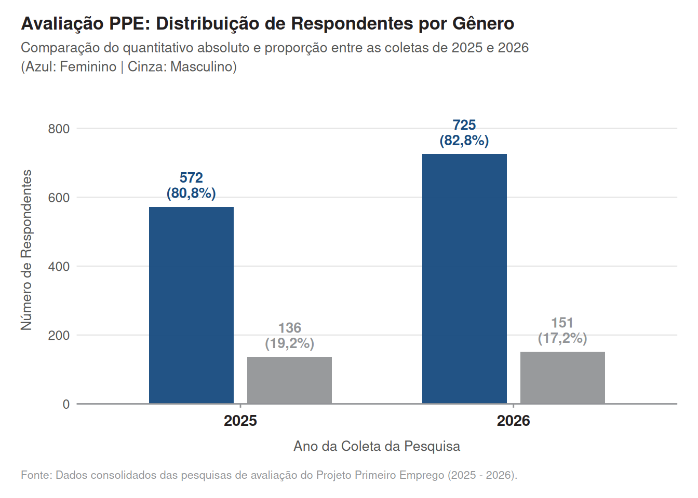
Os dados empíricos evidenciam uma acentuada predominância feminina na composição do público beneficiário do PPE em ambos os anos analisados:
- Em 2025, as mulheres representavam 80,8% dos respondentes válidos (572 beneficiárias), enquanto os homens correspondiam a 19,2% (136 beneficiários);
- Em 2026, a presença feminina ampliou-se em termos absolutos e relativos, alcançando 725 mulheres (82,8%), frente a 151 homens (17,2%);
- Esse avanço absoluto de +153 jovens mulheres (+2,0 pontos percentuais de participação relativa) consolida o PPE como um instrumento estratégico de autonomia econômica feminina e de redução da vulnerabilidade de jovens mulheres no mercado de trabalho formal;
- A expressiva participação feminina decorre fundamentalmente da distribuição setorial das formações técnicas mais demandadas nas unidades estaduais alocadoras — notadamente Enfermagem, Administração e Análises Clínicas —, áreas que tradicionalmente concentram contingentes expressivos de estudantes mulheres na rede pública estadual de ensino.
3.2 Distribuição por Faixa Etária e Dispersão Geracional
A análise etária do público atendido pelo PPE revela uma composição demográfica singular para uma política voltada à inserção profissional. A Tabela 2 apresenta a distribuição das frequências absolutas, relativas e a respectiva evolução em pontos percentuais entre os ciclos de 2025 e 2026.
| Faixa Etária | 2025 (N) | 2025 (%) | 2026 (N) | 2026 (%) | Variação (p.p.) |
|---|---|---|---|---|---|
| 16 a 21 | 233 | 32,8% | 290 | 33,0% | +0,2 |
| 22 a 25 | 150 | 21,1% | 191 | 21,7% | +0,6 |
| 26 a 35 | 159 | 22,4% | 194 | 22,1% | -0,3 |
| Acima de 35 | 169 | 23,8% | 204 | 23,2% | -0,6 |
| Total | 711 | 100,0% | 879 | 100,0% | — |
A dispersão etária comparativa é ilustrada na Figura 2.
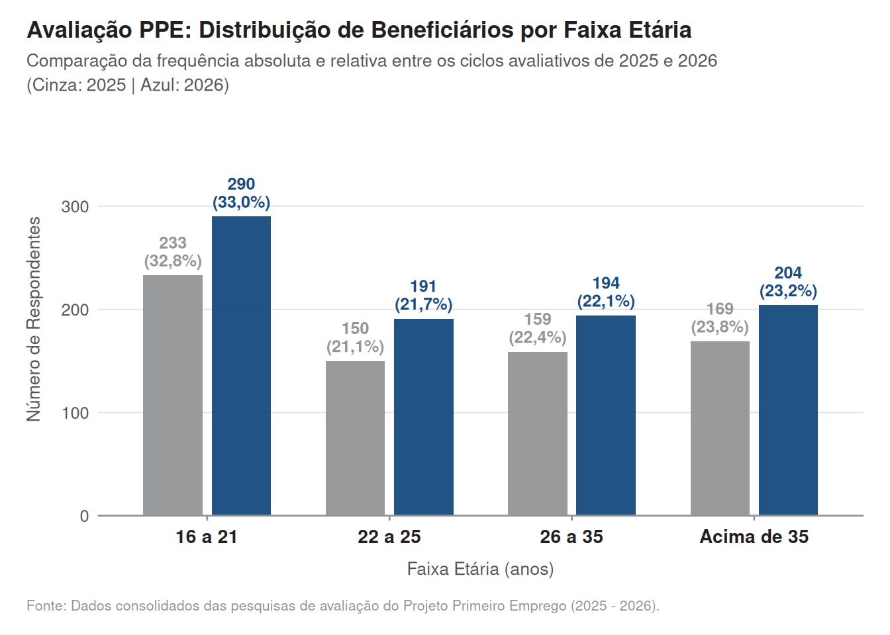
A desagregação por faixas etárias evidencia tendências estruturantes sobre a demografia do programa:
- Juventude Canônica (16 a 25 anos): Este estrato congrega a maioria absoluta dos participantes em ambos os períodos, representando 53,9% em 2025 (383 respondentes) e 54,7% em 2026 (481 respondentes). O grupo de 16 a 21 anos mantém estabilidade proporcional notável, passando de 32,8% (233 jovens) para 33,0% (290 jovens, +0,2 p.p.), enquanto o segmento de 22 a 25 anos avançou de 21,1% (150 jovens) para 21,7% (191 jovens, +0,6 p.p.);
- Transição e Adultos Jovens (26 a 35 anos): Esta faixa representou 22,4% (159 beneficiários) em 2025 e 22,1% (194 beneficiários) em 2026 (-0,3 p.p.), delineando estabilidade no contingente de egressos com maior intervalo temporal entre a conclusão e o chamamento;
- Presença Estruturante Acima de 35 Anos (23% a 24%): Notavelmente, o grupo de beneficiários com mais de 35 anos respondeu por quase um quarto de toda a amostra — 23,8% em 2025 (169 indivíduos) e 23,2% em 2026 (204 indivíduos). Essa constatação empírica desconstrói a premissa de que o PPE atende com exclusividade ao jovem em transição escolar primária;
- Implicações para a Política Pública: A substantiva presença de adultos com mais de 35 anos reflete a dinâmica inclusiva da Educação Profissional e Tecnológica (EPT) na rede estadual baiana, que atrai trabalhadores experientes em processo de requalificação profissional (PROEJA e subsequente). Por conseguinte, o PPE atua concomitantemente em duas frentes complementares: como indutor da inserção inicial de jovens no mercado formal e como mecanismo de reinserção qualificada e mobilidade social para adultos e chefes de família.
3.3 Autodeclaração Étnico-Racial e Equidade
A equidade étnico-racial constitui uma das dimensões axiológicas centrais da política pública estadual. A Tabela 3 consolida os dados de autodeclaração de raça/cor segundo a classificação canônica do IBGE.
| Raça/Cor | 2025 (N) | 2025 (%) | 2026 (N) | 2026 (%) | Variação (p.p.) |
|---|---|---|---|---|---|
| Pardo(a) | 354 | 49,8% | 471 | 53,6% | +3,8 |
| Preto(a) | 262 | 36,8% | 320 | 36,4% | -0,4 |
| Branco(a) | 83 | 11,7% | 76 | 8,6% | -3,0 |
| Amarelo(a) | 6 | 0,8% | 9 | 1,0% | +0,2 |
| Indígena ou de origem indígena | 6 | 0,8% | 3 | 0,3% | -0,5 |
| Total | 711 | 100,0% | 879 | 100,0% | — |
A visualização na Figura 3 destaca o peso das diferentes categorias raciais na base do programa.
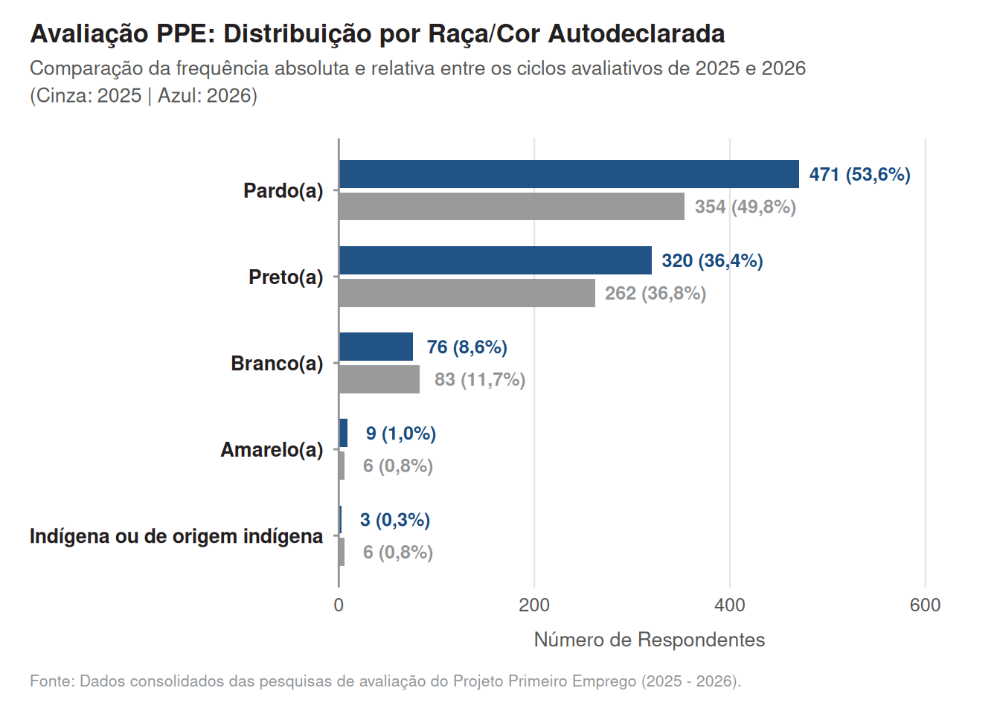
A análise dos microdados revela um alinhamento direto entre a focalização do PPE e a demografia do Estado da Bahia:
- Predominância da População Negra (~87% a 90%): A soma das categorias autodeclaradas como Pardo(a) e Preto(a) atingiu 86,6% em 2025 (616 respondentes) e ampliou-se para 90,0% em 2026 (791 respondentes), representando um ganho consolidado de +3,4 pontos percentuais;
- Crescimento dos Pardos e Estabilidade dos Pretos: Os beneficiários pardos ampliaram sua participação relativa de 49,8% (354) para 53,6% (471, variação de +3,8 p.p.), ao passo que a população preta permaneceu com patamar proporcional estável em 36,8% (262) em 2025 e 36,4% (320) em 2026 (-0,4 p.p.), com incremento absoluto de +58 beneficiários;
- População Branca e Minorias Étnicas: Os beneficiários brancos recuaram de 11,7% (83) para 8,6% (76, variação de -3,0 p.p.). As categorias Amarelo(a) e Indígena ou de origem indígena apresentaram contingentes reduzidos, registrando em 2026 respectivamente 1,0% (9 indivíduos) e 0,3% (3 indivíduos);
- Justiça Social e Equidade Étnico-Racial: Historicamente sub-representada nos postos formais de trabalho com garantias de proteção social, a juventude negra baiana encontra no PPE uma porta institucional de inserção no serviço público e mercado técnico. O programa cumpre função reparadora e atua como vetor essencial de promoção da igualdade racial no estado mais negro da federação.
3.4 Estado Civil e Arranjos Familiares
A estrutura de relacionamentos e estado civil fornece subsídios fundamentais para compreender o grau de dependência econômica, a responsabilidade domiciliar e a maturidade civil dos beneficiários. A Tabela 4 e a Figura 4 apresentam o panorama comparativo desta variável.
| Estado Civil | 2025 (N) | 2025 (%) | 2026 (N) | 2026 (%) | Variação (p.p.) |
|---|---|---|---|---|---|
| Solteiro(a) | 560 | 78,8% | 712 | 81,0% | +2,2 |
| Casado(a) | 135 | 19,0% | 147 | 16,7% | -2,3 |
| Separado(a) | 16 | 2,3% | 20 | 2,3% | +0,0 |
| Total | 711 | 100,0% | 879 | 100,0% | — |
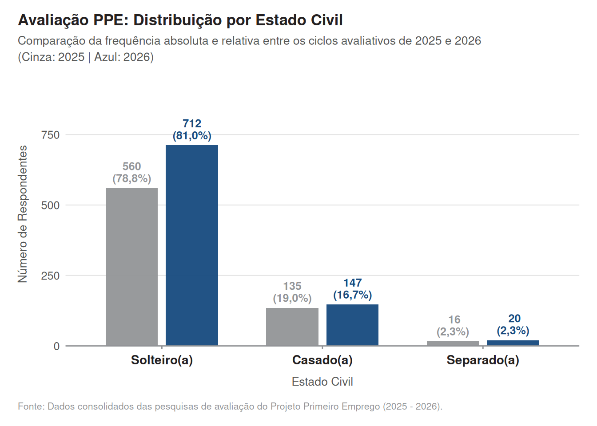
A evolução longitudinal do estado civil dos beneficiários evidencia:
- Hegemonia de Solteiros: A grande maioria do público é constituída por indivíduos solteiros, grupo que saltou de 78,8% em 2025 (560 respondentes) para 81,0% em 2026 (712 respondentes), com crescimento de +2,2 pontos percentuais e adição líquida de 152 jovens;
- Beneficiários Casados e Arranjos Conjugais Estáveis: O segmento casado ou em união estável representava 19,0% em 2025 (135 indivíduos) e passou para 16,7% em 2026 (147 indivíduos, oscilação de -2,3 p.p., embora tenha crescido em termos absolutos em +12 pessoas);
- Separados e Divorciados: A proporção de indivíduos separados manteve-se absolutamente estável em 2,3% em ambos os ciclos avaliativos (16 pessoas em 2025 e 20 pessoas em 2026);
- Significado Socioeconômico: Embora o perfil solteiro seja condizente com a fase inicial do ciclo de vida, a presença de cerca de um quinto da amostra com vínculos conjugais ou histórico de separação dialoga diretamente com a constatação etária anterior (presença de adultos acima de 35 anos). Isso atesta que a remuneração do PPE frequentemente sustenta arranjos familiares e dependentes diretos.
3.5 Diversidade e Orientação Sexual
A investigação sobre orientação sexual no âmbito do monitoramento do PPE permite mensurar o alcance de políticas de diversidade e direitos humanos em um programa de inserção profissional. A Tabela 5 sumariza a distribuição das respostas e suas respectivas oscilações.
| Orientação Sexual | 2025 (N) | 2025 (%) | 2026 (N) | 2026 (%) | Variação (p.p.) |
|---|---|---|---|---|---|
| Heterossexual | 649 | 91,3% | 776 | 88,3% | -3,0 |
| Bissexual | 26 | 3,7% | 24 | 2,7% | -0,9 |
| Homossexual/Lésbica | 25 | 3,5% | 22 | 2,5% | -1,0 |
| Pansexual | 4 | 0,6% | 3 | 0,3% | -0,2 |
| Assexual | 1 | 0,1% | 1 | 0,1% | -0,0 |
| Prefiro não responder/Outro | 6 | 0,8% | 53 | 6,0% | +5,2 |
| Total | 711 | 100,0% | 879 | 100,0% | — |
O gráfico comparativo correspondente é apresentado na Figura 5.
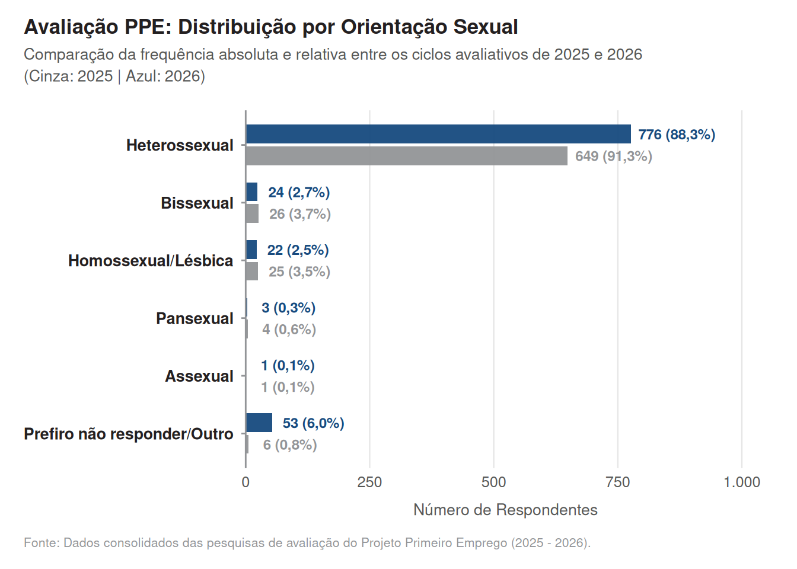
A distribuição e as alterações metodológicas observadas no quesito de orientação sexual apontam aspectos relevantes:
- Predomínio Heterossexual: A orientação heterossexual constitui a parcela majoritária dos beneficiários, abarcando 91,3% em 2025 (649 respondentes) e 88,3% em 2026 (776 respondentes), correspondendo a uma variação de -3,0 pontos percentuais na participação relativa em face do incremento de respostas de reserva;
- População LGBTQIA+ Declarada: Os beneficiários bissexuais totalizaram 3,7% em 2025 (26 respondentes) e 2,7% em 2026 (24 respondentes, -0,9 p.p.). O segmento de homossexuais e lésbicas registrou 3,5% em 2025 (25 respondentes) e 2,5% em 2026 (22 respondentes, -1,0 p.p.). Pansexuais e assexuais somam conjuntamente cerca de 0,4% a 0,7% do total;
- Comportamento das Não-Respostas e Privacidade: A categoria de controle “Prefiro não responder/Outro” expandiu-se expressivamente, subindo de 0,8% em 2025 (6 respostas) para 6,0% em 2026 (53 respostas, variação de +5,2 pontos percentuais). Essa ampliação decorre da maior liberdade e anonimização percebida pelos participantes no instrumento de 2026, bem como da retenção de respostas não conformes na categoria de resguardo;
- Relevância para a Gestão Pública: A visibilidade de minorias sexuais em programas governamentais reforça a necessidade de manutenção de ambientes de trabalho inclusivos, livres de discriminação e pautados pelo respeito à diversidade nos órgãos e entidades da administração estadual alocadoras de estagiários e técnicos do PPE.
3.6 Diversidade Religiosa e Identidade Espiritual
A afiliação religiosa e a vivência espiritual constituem dimensões relevantes para a compreensão da pluralidade cultural e das redes de apoio comunitário dos jovens beneficiários. A Tabela 6 sintetiza as declarações confessionais e suas respectivas variações percentuais entre 2025 e 2026.
| Afiliação Religiosa | 2025 (N) | 2025 (%) | 2026 (N) | 2026 (%) | Variação (p.p.) |
|---|---|---|---|---|---|
| Evangélica / Cristã | 289 | 40,6% | 343 | 39,0% | -1,6 |
| Católica | 221 | 31,1% | 283 | 32,2% | +1,1 |
| Sem religião | 158 | 22,2% | 200 | 22,8% | +0,5 |
| Matriz Africana (Candomblé/Umbanda) | 18 | 2,5% | 26 | 3,0% | +0,4 |
| Testemunha de Jeová | 20 | 2,8% | 16 | 1,8% | -1,0 |
| Espírita | 4 | 0,6% | 4 | 0,5% | -0,1 |
| Outras religiões | 1 | 0,1% | 7 | 0,8% | +0,7 |
| Total | 711 | 100,0% | 879 | 100,0% | — |
A visualização gráfica das afiliações religiosas é apresentada na Figura 6.
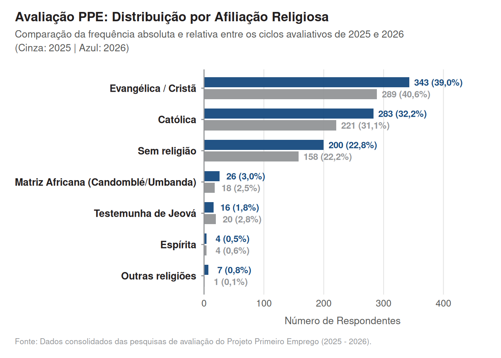
Os dados empíricos delineiam o mosaico confessional do programa, refletindo traços característicos da demografia religiosa brasileira e baiana:
- Predominância Cristã Evangélica e Católica: O segmento evangélico/cristão consolida-se como o maior grupo individual, abarcando 40,6% em 2025 (289 respondentes) e 39,0% em 2026 (343 respondentes, discreta oscilação de -1,6 p.p.). A Igreja Católica congrega a segunda maior parcela, passando de 31,1% (221 indivíduos) para 32,2% (283 indivíduos, +1,1 p.p.). Somadas, as matrizes cristãs tradicionais abarcam mais de 71% dos participantes;
- Expressividade dos Beneficiários Sem Religião: O contingente que se declara sem filiação religiosa, ateu ou agnóstico representa quase um quarto da amostra em ambos os períodos — 22,2% em 2025 (158 respondentes) e 22,8% em 2026 (200 respondentes, +0,6 p.p.). Essa constatação alinha-se às tendências demográficas contemporâneas de secularização observadas entre as novas gerações brasileiras;
- Religiões de Matriz Africana e Pluralismo Espiritual: Os praticantes de Candomblé e Umbanda registraram 2,5% em 2025 (18 indivíduos) e 3,0% em 2026 (26 indivíduos, avanço de +0,5 p.p.). Embora minoritária em termos absolutos, a presença autodeclarada das tradições de matriz afro-brasileira é politicamente expressiva no contexto baiano. Testemunhas de Jeová (1,8% a 2,8%), Espíritas (0,5% a 0,6%) e outras manifestações confessionais (0,8%) completam o espectro de diversidade;
- Laicidade e Convivência Cidadã: A coexistência harmônica de múltiplos credos em uma política pública governamental reforça o papel do ambiente de estágio e atuação técnica no PPE como um espaço pautado pela laicidade estatal, tolerância e respeito irrestrito à liberdade de crença assegurada constitucionalmente.
3.7 Redes Sociais e Canais de Comunicação com os Beneficiários
A identificação dos hábitos de conectividade e dos canais digitais utilizados pelos beneficiários subsidia o aprimoramento dos fluxos de acompanhamento, convocação e monitoramento institucional do programa. A Tabela 7 apresenta a distribuição dos canais virtuais preferenciais.
| Rede Social / Canal | 2025 (N) | 2025 (%) | 2026 (N) | 2026 (%) | Variação (p.p.) |
|---|---|---|---|---|---|
| 464 | 65,3% | 536 | 61,0% | -4,3 | |
| Não participa de rede social | 181 | 25,5% | 276 | 31,4% | +5,9 |
| 12 | 1,7% | 30 | 3,4% | +1,7 | |
| Tik Tok | 20 | 2,8% | 9 | 1,0% | -1,8 |
| 21 | 3,0% | 9 | 1,0% | -1,9 | |
| 5 | 0,7% | 1 | 0,1% | -0,6 | |
| Outras / Múltiplas redes | 8 | 1,1% | 18 | 2,0% | +0,9 |
| Total | 711 | 100,0% | 879 | 100,0% | — |
A dispersão das plataformas e comportamentos de uso digital é ilustrada na Figura 7.
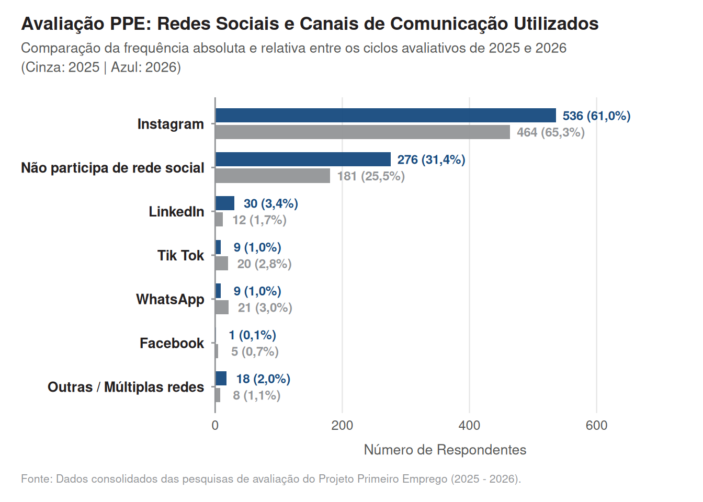
A análise comparativa do padrão de conectividade virtual dos beneficiários destaca:
- Hegemonia do Instagram como Canal Primário: O Instagram desponta como a plataforma virtual amplamente dominante, concentrando 65,3% das menções em 2025 (464 respondentes) e 61,0% em 2026 (536 respondentes). Trata-se da interface digital primária para campanhas informativas, divulgação de ações pedagógicas e reforço de pertencimento institucional;
- Desafio Estruturante dos Desconectados de Redes (25% a 31%): Uma parcela substancial do público informou não utilizar redes sociais — 25,5% em 2025 (181 pessoas) e 31,4% em 2026 (276 pessoas, expressivo avanço de +5,9 pontos percentuais). Esse dado empírico é de fundamental relevância para a governança do PPE: estratégias de comunicação estritamente baseadas em redes sociais digitais excluem quase um terço dos beneficiários, impondo a manutenção mandatória de canais diretos e convencionais, tais como SMS institucional, correio eletrônico (e-mail), contato telefônico ativo e atuação presencial dos monitores de campo da FESF-SUS;
- Avanço Estratégico do LinkedIn: A presença de perfis profissionais no LinkedIn dobrou proporcionalmente entre os dois anos, avançando de 1,7% (12 respondentes) em 2025 para 3,4% (30 respondentes) em 2026 (+1,7 p.p.). Embora ainda tímido em termos absolutos, esse crescimento sinaliza uma progressiva apropriação de redes de empregabilidade formal pelos egressos da EPT ao longo de sua vivência no programa;
- Outras Plataformas e Redes Complementares: O aplicativo Tik Tok e o WhatsApp (como rede declarada) registraram retrações relativas em 2026 (ambos oscilando para 1,0%), ao passo que usuários de múltiplas plataformas representaram 2,0% (18 respondentes). O Facebook registrou presença residual (<0,7%), confirmando o desuso da plataforma pelas gerações mais jovens.
3.8 Síntese Interseccional Sociodemográfica: Diagrama Aluvial
A compreensão aprofundada da focalização e da equidade do Projeto Primeiro Emprego requer uma abordagem analítica integradora que articule simultaneamente as dimensões de gênero, geração e pertencimento étnico-racial. A Tabela 8 sintetiza os dez principais perfis sociodemográficos interseccionais identificados na base empírica, com as respectivas evoluções proporcionais entre os ciclos de 2025 e 2026.
| Sexo | Faixa Etária | Raça/Cor | 2025 (N) | 2025 (%) | 2026 (N) | 2026 (%) | Variação (p.p.) |
|---|---|---|---|---|---|---|---|
| Feminino | 16 a 21 | Pardo(a) | 78 | 11,0% | 124 | 14,2% | +3,1 |
| Feminino | Acima de 35 | Pardo(a) | 79 | 11,2% | 107 | 12,2% | +1,1 |
| Feminino | 26 a 35 | Pardo(a) | 70 | 9,9% | 84 | 9,6% | -0,3 |
| Feminino | Acima de 35 | Preto(a) | 66 | 9,3% | 76 | 8,7% | -0,6 |
| Feminino | 26 a 35 | Preto(a) | 60 | 8,5% | 79 | 9,0% | +0,5 |
| Feminino | 22 a 25 | Pardo(a) | 55 | 7,8% | 72 | 8,2% | +0,5 |
| Feminino | 16 a 21 | Preto(a) | 52 | 7,3% | 64 | 7,3% | -0,0 |
| Feminino | 22 a 25 | Preto(a) | 44 | 6,2% | 55 | 6,3% | +0,1 |
| Masculino | 16 a 21 | Pardo(a) | 36 | 5,1% | 44 | 5,0% | -0,1 |
| Masculino | 22 a 25 | Pardo(a) | 26 | 3,7% | 22 | 2,5% | -1,2 |
| Total Amostral Válido | — | — | 708 | 100,0% | 876 | 100,0% | — |
O mapeamento contínuo dos fluxos sociodemográficos entre as três dimensões analíticas é visualizado no diagrama aluvial da Figura 8, estratificado por ano de monitoramento.
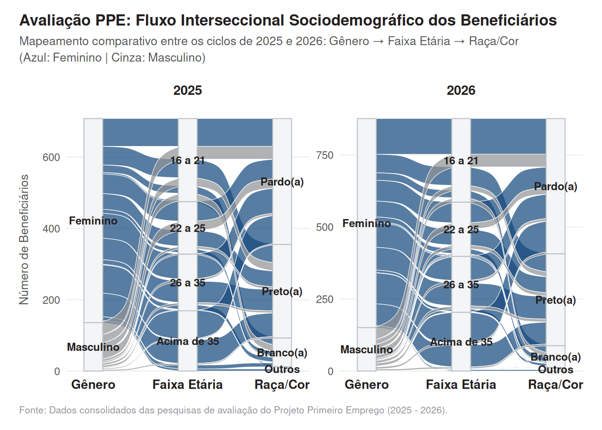
A análise integrada dos fluxos aluviais e das frequências interseccionais revela achados substantivos sobre a arquitetura social do programa:
- Predominância Estruturante da Mulher Jovem Negra: O fluxo mais volumoso e expressivo em ambos os anos analisados congrega mulheres jovens (16 a 25 anos) autodeclaradas pardas e pretas. O perfil de mulheres de 16 a 21 anos pardas representou o ápice isolado em 2026, saltando de 11,0% (78 respondentes) em 2025 para 14,2% (124 respondentes, avanço de +3,2 pontos percentuais). Somando-se as faixas de 16 a 21 e 22 a 25 anos entre pardas e pretas, este macrocontingente de jovens mulheres negras reuniu 32,3% de toda a amostra em 2025 (229 beneficiárias) e expandiu-se para 36,0% em 2026 (315 beneficiárias), consolidando o PPE como uma política de ponta na inserção profissional de jovens mulheres negras na Bahia;
- Expressividade das Mulheres Adultas Negras (Acima de 35 Anos): O segundo maior fluxo interseccional contínuo no diagrama é formado por mulheres adultas com mais de 35 anos pertencentes aos estratos pardo e preto. Em 2025, mulheres acima de 35 anos pardas (79 beneficiárias, 11,2%) e pretas (66 beneficiárias, 9,3%) somavam 20,5% da amostra total. Em 2026, esse contingente manteve expressividade equivalente, com 107 pardas (12,2%) e 76 pretas (8,7%), perfazendo 20,9% de todos os respondentes válidos. Esse fluxo atesta que o programa atua diretamente na proteção social e geração de renda de mães, chefes de família e trabalhadoras em transição de carreira após a conclusão de cursos técnicos subsequentes ou PROEJA;
- Composição Proporcional e Equilibrada do Contingente Masculino: Em contraste com a dominância de fluxos femininos, o contingente masculino apresenta fluxos visualmente mais estreitos e homogeneamente distribuídos entre as faixas etárias e raças. O principal fluxo masculino é composto por jovens de 16 a 21 anos pardos, representando 5,1% em 2025 (36 beneficiários) e 5,0% em 2026 (44 beneficiários), seguido pelo segmento de 22 a 25 anos pardos (3,7% em 2025 e 2,5% em 2026). Homens pretos e brancos distribuem-se em fluxos inferiores a 2,5% em cada estrato etário, mantendo estabilidade no decorrer dos dois ciclos;
- Robustez Institucional e Estabilidade da Focalização: A comparação direta proporcionada pela divisão em painéis (
facet_wrap) entre 2025 e 2026 evidencia a extraordinária estabilidade na morfologia dos fluxos. Mesmo com a ampliação amostral em 2026 (incorporação líquida de +153 mulheres e +15 homens), a hierarquia e o desenho das correntes mantiveram-se consistentes. Esse comportamento comprova que o modelo de chamamento público e a alocação de postos de trabalho do PPE preservam seu rigor focal e sua eficácia inclusiva ao longo do tempo.
4 Trajetória Educacional e Formação Profissional
Esta seção examina os itinerários formativos, a bagagem de capital cultural e as aspirações de educação continuada dos beneficiários do Projeto Primeiro Emprego (PPE). Investiga-se a conformidade com os requisitos de elegibilidade escolar, a defasagem temporal entre a diplomação e a inserção no programa, a distribuição temática das habilitações técnicas da EPT, a mobilidade educacional intergeracional em relação aos pais e as práticas de letramento, estudo autônomo e transição para o ensino superior.
4.1 Conclusão da Educação Básica e Elegibilidade Normativa
A conclusão do Ensino Médio integrado ou concomitante à formação técnica na rede pública estadual constitui a pedra fundamental dos critérios de elegibilidade do PPE. A Tabela 9 consolida o cumprimento deste marco normativo nos dois ciclos avaliativos.
| Condição de Conclusão | 2025 (N) | 2025 (%) | 2026 (N) | 2026 (%) | Variação (p.p.) |
|---|---|---|---|---|---|
| Concluiu o Ensino Médio | 709 | 99,7% | 879 | 100,0% | +0,3 |
| Não concluiu | 2 | 0,3% | 0 | 0,0% | -0,3 |
| Total | 711 | 100,0% | 879 | 100,0% | — |
A visualização gráfica na Figura 9 demonstra a universalização do requisito na base de respondentes.
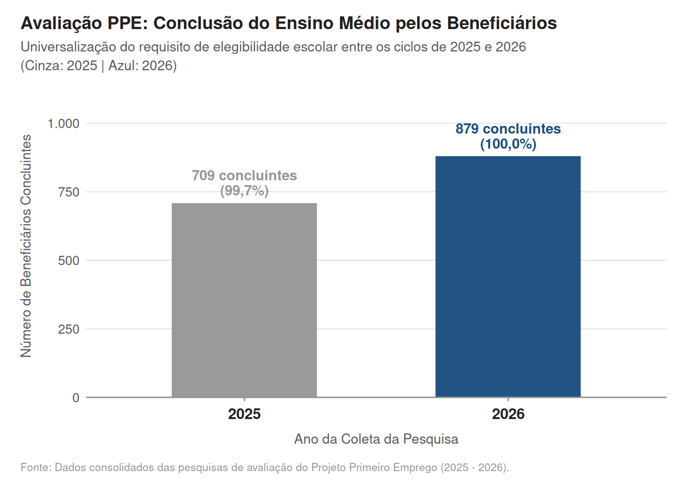
Os resultados refletem a consistência regulamentar do programa:
- Conformidade Normativa Plena: Em 2025, 99,7% dos participantes (709 beneficiários) haviam concluído formalmente o ensino médio, registrando-se apenas 2 casos residuais de pendência burocrática documental. Em 2026, a conformidade alcançou 100,0% (879 beneficiários);
- Ajuste Metodológico de Coleta: Conforme detalhado na Nota Técnica, a variável
q26deixou de ser indagada diretamente no instrumento de campo de 2026, visto que a comprovação da conclusão da EPT é validada administrativamente no ato de convocação e assinatura do contrato de trabalho, eliminando redundâncias no questionário de monitoramento.
4.2 Intervalo Temporal de Conclusão e Defasagem até a Inserção Laboral
A análise do ano de conclusão do ensino médio (q30) permite mensurar a rapidez da transição escola-trabalho propiciada pelo programa e o intervalo de espera enfrentado pelos egressos. A Tabela 10 e a Figura 10 apresentam a distribuição cronológica dos concluintes agrupados por coortes temporais.
| Período de Conclusão | 2025 (N) | 2025 (%) | 2026 (N) | 2026 (%) | Variação (p.p.) |
|---|---|---|---|---|---|
| Até 2015 | 181 | 25,7% | 197 | 22,5% | -3,2 |
| 2016 a 2020 | 149 | 21,2% | 147 | 16,8% | -4,3 |
| 2021 a 2023 | 320 | 45,5% | 379 | 43,4% | -2,1 |
| 2024 em diante | 54 | 7,7% | 151 | 17,3% | +9,6 |
| Total Válido | 704 | 100,0% | 874 | 100,0% | — |
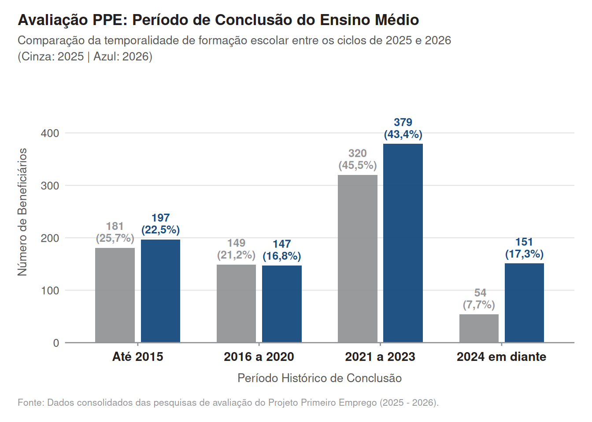
Os dados cronológicos revelam dinâmicas expressivas sobre o ritmo de absorção dos egressos:
- Concentração em Egressos Recentes (2021 a 2023): A coorte de formados entre 2021 e 2023 manteve-se como a principal beneficiária em termos relativos, abarcando 45,5% em 2025 (320 concluintes) e 43,4% em 2026 (379 concluintes);
- Aceleração da Absorção Recente (2024 em diante): Destaca-se o salto extraordinário da coorte mais novel (concluintes de 2024 em diante), que saltou de 7,7% em 2025 (54 concluintes) para 17,3% em 2026 (151 concluintes), um incremento expressivo de +9,6 pontos percentuais. Isso evidencia um encurtamento substancial no tempo de resposta e convocação do banco de egressos da Secretaria da Educação (SEC/BA);
- Parcela Histórica e Egressos Anteriores a 2015: O contingente com conclusão anterior a 2015 representou 25,7% em 2025 (181) e 22,5% em 2026 (197, oscilação de -3,2 p.p.). Esse grupo alinha-se perfeitamente à presença de trabalhadores acima de 35 anos identificada na demografia etária, atestando o papel do PPE na absorção de turmas pretéritas e concluintes do PROEJA que aguardavam oportunidades de colocação profissional formal.
4.3 Formação Técnica e Distribuição por Áreas da EPT
As áreas técnicas de formação dos beneficiários refletem a articulação entre os cursos ofertados pelos Centros Estaduais e Territoriais de Educação Profissional (CEEPs/CETEPs) e a demanda ocupacional dos órgãos contratantes. A Tabela 11 sintetiza as principais áreas de diplomação técnica.
| Curso / Área Técnica | 2025 (N) | 2025 (%) | 2026 (N) | 2026 (%) | Variação (p.p.) |
|---|---|---|---|---|---|
| Administração | 273 | 38,4% | 402 | 45,7% | +7,3 |
| Enfermagem | 187 | 26,3% | 72 | 8,2% | -18,1 |
| Informática / TI | 84 | 11,8% | 137 | 15,6% | +3,8 |
| Logística | 57 | 8,0% | 77 | 8,8% | +0,7 |
| Análises Clínicas | 32 | 4,5% | 68 | 7,7% | +3,2 |
| Outras áreas da Saúde | 24 | 3,4% | 41 | 4,7% | +1,3 |
| Outros cursos técnicos | 28 | 3,9% | 35 | 4,0% | +0,0 |
| Segurança do Trabalho | 14 | 2,0% | 29 | 3,3% | +1,3 |
| Nutrição e Dietética | 8 | 1,1% | 13 | 1,5% | +0,4 |
| Secretariado | 4 | 0,6% | 5 | 0,6% | +0,0 |
| Total Amostral | 711 | 100,0% | 879 | 100,0% | — |
A dispersão das áreas técnicas de diplomação é visualizada na Figura 11.
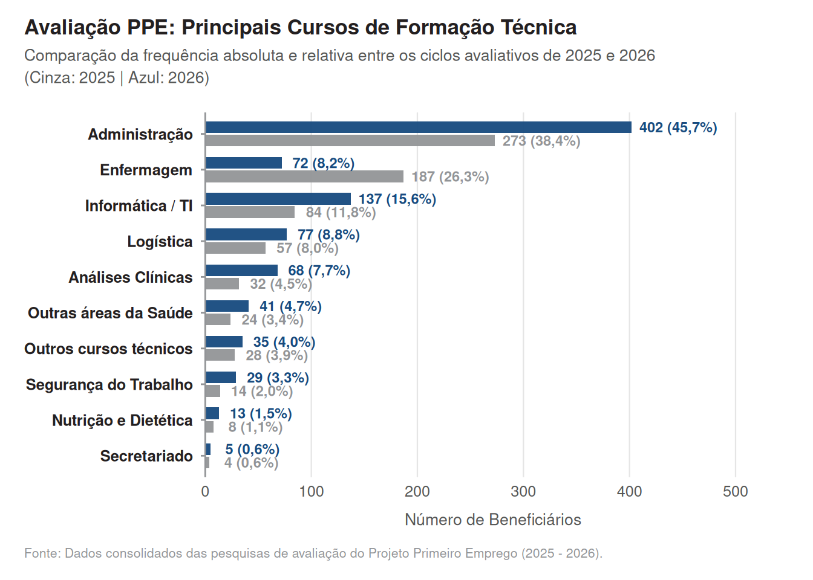
A estrutura de habilitações profissionais evidencia tendências setoriais nítidas:
- Predominância Estrutural de Administração: O curso técnico em Administração consolidou-se como o polo mais volumoso do programa, subindo de 38,4% em 2025 (273 técnicos) para expressivos 45,7% em 2026 (402 técnicos, expansão líquida de +7,3 pontos percentuais). Essa liderança decorre da alta capilaridade de postos de apoio administrativo em secretarias, autarquias e fundações do Estado;
- Reconfiguração da Área de Enfermagem: A participação de técnicos em Enfermagem registrou forte retração proporcional, recuando de 26,3% em 2025 (187) para 8,2% em 2026 (72, queda de -18,1 p.p.). Essa variação expressiva reflete dinâmicas operacionais de contratação setorial no âmbito da saúde pública e a transição de contratos vinculados à Fundação Estatal Saúde da Família (FESF-SUS);
- Expansão em Tecnologia da Informação e Logística: O setor de Informática e Tecnologia da Informação (TI) apresentou crescimento notável, avançando de 11,8% (84) para 15,6% (137, ganho de +3,8 p.p.), acompanhado pela consolidação de Logística (8,8% em 2026) e Análises Clínicas (7,7% em 2026, ganho de +3,2 p.p.). Esses números sinalizam uma progressiva diversificação das funções técnicas exercidas pelos jovens no serviço público.
4.5 Práticas de Leitura e Acúmulo de Capital Cultural
O hábito de leitura constitui um indicador clássico de capital cultural institucionalizado e incorporado, refletindo práticas culturais que potencializam a comunicação e a autoeficácia laboral. A Tabela 13 e a Figura 13 expõem o quantitativo de livros lidos nos últimos 12 meses.
| Livros Lidos nos Últimos 12 Meses | 2025 (N) | 2025 (%) | 2026 (N) | 2026 (%) | Variação (p.p.) |
|---|---|---|---|---|---|
| Nenhum | 137 | 19,3% | 158 | 18,0% | -1,3 |
| Um ou dois | 343 | 48,2% | 444 | 50,5% | +2,3 |
| Entre três e cinco | 154 | 21,7% | 194 | 22,1% | +0,4 |
| Entre seis e oito | 34 | 4,8% | 34 | 3,9% | -0,9 |
| Mais de oito | 43 | 6,0% | 49 | 5,6% | -0,5 |
| Total | 711 | 100,0% | 879 | 100,0% | — |
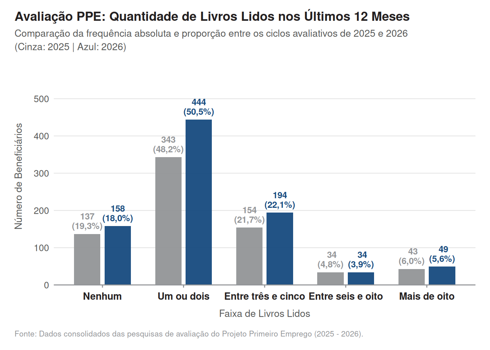
A distribuição do letramento literário e técnico revela:
- Estabilidade do Hábito Moderado de Leitura: Metade exata dos beneficiários declarou ter lido “Um ou dois livros” no último ano — 48,2% em 2025 (343 respondentes) e 50,5% em 2026 (444 respondentes, +2,3 p.p.). Leitores assíduos de “Três a cinco livros” somaram 21,7% em 2025 e 22,1% em 2026;
- Resistência do Não-Hábito de Leitura: A proporção de indivíduos que declarou não ter lido nenhum livro permaneceu em torno de um quinto da amostra, registrando discreta redução de 19,3% em 2025 (137 beneficiários) para 18,0% em 2026 (158 beneficiários, -1,3 p.p.);
- Leitores Frequentes: O contingente com práticas intensivas de leitura (mais de seis livros lidos) totalizou 10,8% em 2025 e 9,5% em 2026, apontando para a oportunidade de inclusão de estímulos à leitura e letramento digital nas ações de formação continuada do programa.
4.6 Carga Horária Semanal Dedicada aos Estudos
A conciliação entre a jornada de trabalho formal no PPE e as atividades de estudo autônomo fornece subsídios fundamentais para avaliar a sobrecarga de rotina e a dedicação à qualificação profissional. A Tabela 14 e a Figura 14 detalham o tempo semanal consagrado aos estudos extracontratuais.
| Horas Semanais de Estudo | 2025 (N) | 2025 (%) | 2026 (N) | 2026 (%) | Variação (p.p.) |
|---|---|---|---|---|---|
| Nenhuma, apenas trabalho | 139 | 19,5% | 167 | 19,0% | -0,6 |
| Uma a três | 394 | 55,4% | 488 | 55,5% | +0,1 |
| Quatro a sete | 121 | 17,0% | 161 | 18,3% | +1,3 |
| Oito a doze | 26 | 3,7% | 39 | 4,4% | +0,8 |
| Mais de doze | 31 | 4,4% | 24 | 2,7% | -1,6 |
| Total | 711 | 100,0% | 879 | 100,0% | — |
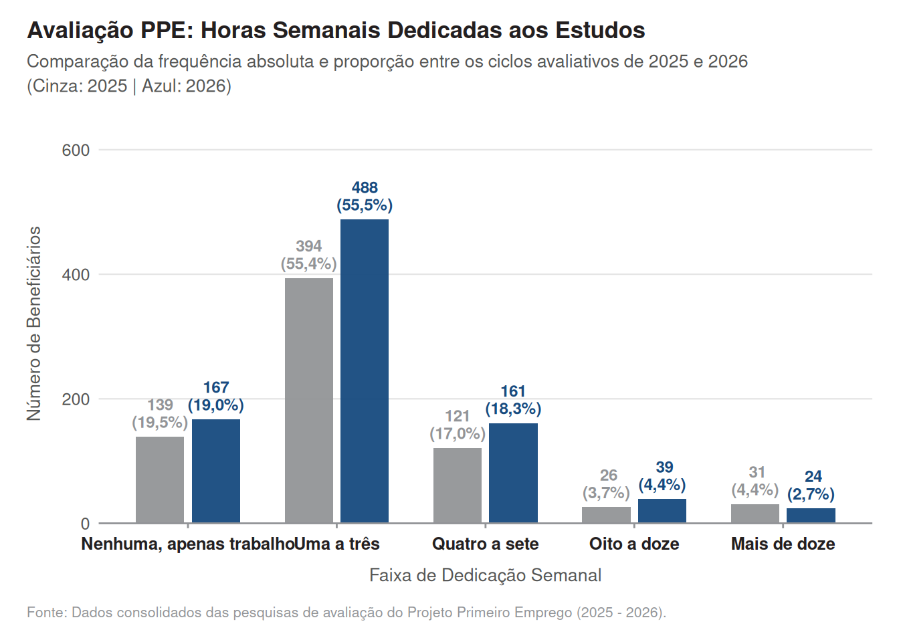
Os dados evidenciam uma consistente rotina de conciliação estudo-trabalho:
- Predomínio da Faixa de Uma a Três Horas: Mais da metade dos jovens destina de uma a três horas semanais aos estudos — 55,4% em 2025 (394 beneficiários) e 55,5% em 2026 (488 beneficiários);
- Estudo Intermediário e Intensivo: Beneficiários que estudam de quatro a sete horas semanais responderam por 17,0% em 2025 (121) e subiram para 18,3% em 2026 (161, +1,3 p.p.). Cargas horárias elevadas (mais de oito horas semanais) somaram 8,1% em 2025 e 7,1% em 2026;
- Exclusividade Laboral: Cerca de 19,5% em 2025 e 19,0% em 2026 relataram não estudar, dedicando-se com exclusividade às atividades laborais, o que ressalta a importância de mecanismos institucionais que incentivem a permanência educacional.
4.7 Disposição para a Educação Continuada e Desejo de Estudar
A autoavaliação sobre a disposição interna para continuar os estudos (q58) mede o grau de aspiração acadêmica e o engajamento com a formação continuada. A Tabela 15 e a Figura 15 sintetizam a escala Likert correspondente.
| Intensidade do Desejo de Estudar | 2025 (N) | 2025 (%) | 2026 (N) | 2026 (%) | Variação (p.p.) |
|---|---|---|---|---|---|
| Muito fraco | 1 | 0,1% | 2 | 0,2% | +0,1 |
| Fraco | 8 | 1,1% | 9 | 1,0% | -0,1 |
| Regular | 83 | 11,7% | 107 | 12,2% | +0,5 |
| Alto | 251 | 35,3% | 265 | 30,1% | -5,2 |
| Muito alto | 368 | 51,8% | 496 | 56,4% | +4,7 |
| Total | 711 | 100,0% | 879 | 100,0% | — |
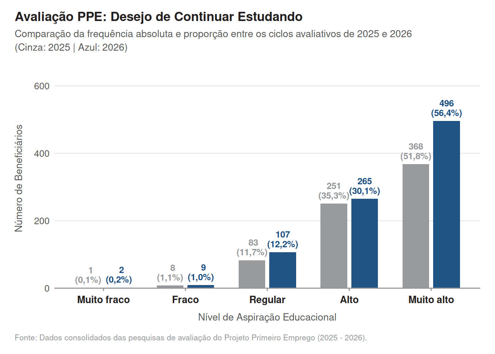
As aspirações educacionais dos beneficiários revelam índices impressionantes de motivação:
- Quase Unanimidade nas Aspirações Elevadas (86% a 87%): A soma das categorias “Alto” e “Muito alto” atingiu 87,1% em 2025 (619 respondentes) e 86,5% em 2026 (761 respondentes);
- Crescimento do Desejo “Muito Alto”: O patamar de máxima convicção na continuidade formativa (“Muito alto”) cresceu significativamente de 51,8% (368 jovens) para 56,4% (496 jovens, avanço notável de +4,6 pontos percentuais);
- Rejeição Residual: As avaliações de desejo fraco ou muito fraco permaneceram abaixo de 1,2% em ambos os períodos, desmistificando concepções de acomodação profissional e confirmando que o ingresso no mercado formal atua como estímulo catalisador para projetos de expansão escolar.
4.8 Ingresso no Ensino Superior e Transição Universitária
A taxa de acesso e permanência na universidade (q59) afere em que medida a renda auferida no PPE possibilita a progressão para a educação superior. A Tabela 16 e a Figura 16 apresentam as proporções de jovens matriculados no terceiro grau.
| Matrícula Universitária | 2025 (N) | 2025 (%) | 2026 (N) | 2026 (%) | Variação (p.p.) |
|---|---|---|---|---|---|
| Matriculado(a) no Ensino Superior | 436 | 61,3% | 321 | 36,5% | -24,8 |
| Não matriculado(a) | 275 | 38,7% | 558 | 63,5% | +24,8 |
| Total | 711 | 100,0% | 879 | 100,0% | — |
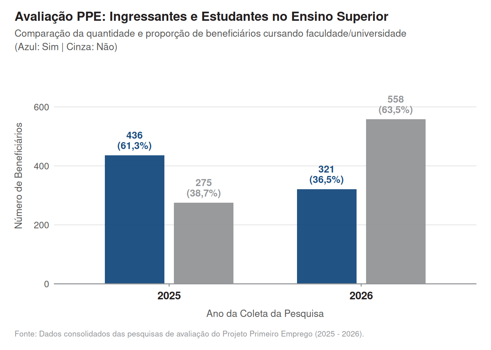
A evolução da inserção no ensino superior delineia um cenário de forte relevância analítica:
- Inflexão Amostral na Matrícula Superior: Em 2025, uma sólida maioria de 61,3% (436 respondentes) declarou estar cursando o ensino superior. Em 2026, esse índice recuou para 36,5% (321 respondentes, variação de -24,8 pontos percentuais);
- Fatores Condicionantes da Inflexão: Essa diferença expressiva entre as rodadas explica-se por duas razões estruturais: (i) a incorporação em 2026 de um contingente substancialmente mais jovem e recém-saído da escola técnica (egressos de 2024 em diante saltando para 17,3%), grupo que ainda se encontra em fase de preparação para vestibulares e ENEM; e (ii) barreiras de conciliação de tempo e custos de mensalidade/deslocamento entre municípios do interior baiano;
- Potencial de Articulação Governamental: Mesmo com o recuo percentual relativo, mais de um terço da base de 2026 (321 beneficiários) financia seus estudos de graduação com a renda propiciada pelo PPE. Este resultado evidencia a urgência de parcerias estratégicas do programa com universidades estaduais (UNEB, UESC, UESB, UEFS) e programas de bolsas para viabilizar a permanência de egressos da escola pública no ensino superior.
5 Distribuição Territorial, Mobilidade e Alocação no Programa
Esta seção analisa a geografia da execução do Projeto Primeiro Emprego (PPE), investigando a origem federativa e municipal dos beneficiários, os polos de residência e atuação profissional, a dinâmica de deslocamento pendular e a distribuição setorial da alocação de postos de trabalho entre os órgãos da administração pública estadual. Adicionalmente, examina-se a coexistência de coortes de ingresso no programa, avaliando o ritmo de renovação dos beneficiários.
5.1 Origem Federativa e Dinâmica Migratória Interestadual
A verificação do estado de nascimento dos participantes (q27) permite identificar a extensão do pertencimento territorial e o alcance de fluxos migratórios interestaduais entre os concluintes da EPT baiana. A Tabela 17 consolida a distribuição por Unidade da Federação de origem.
| Estado de Nascimento (UF) | 2025 (N) | 2025 (%) | 2026 (N) | 2026 (%) | Variação (p.p.) |
|---|---|---|---|---|---|
| Bahia (BA) | 655 | 92,1% | 836 | 95,1% | +3,0 |
| São Paulo (SP) | 21 | 3,0% | 18 | 2,0% | -1,0 |
| Rio de Janeiro (RJ) | 0 | 0,0% | 8 | 0,9% | +0,9 |
| Outros Estados | 35 | 4,9% | 17 | 1,9% | -3,0 |
| Total | 711 | 100,0% | 879 | 100,0% | — |
A hegemonia dos baianos natos é evidenciada no gráfico da Figura 17.
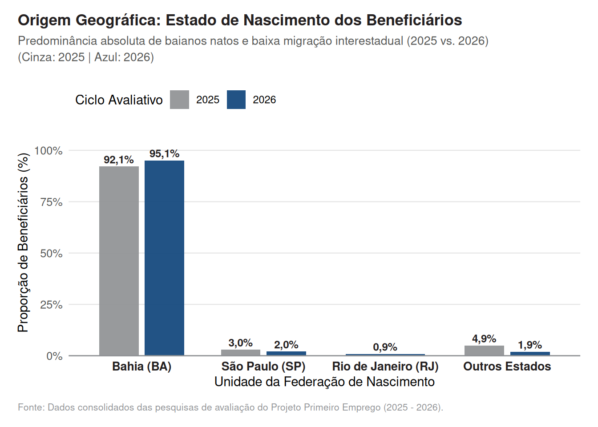
Os dados atestam um enraizamento territorial expressivo da política pública:
- Hegemonia de Baianos Natos (>92% a 95%): A imensa maioria dos beneficiários nasceu no próprio Estado da Bahia, alcançando 92,1% em 2025 (655 respondentes) e ampliando-se para expressivos 95,1% em 2026 (836 respondentes, avanço de +3,0 pontos percentuais);
- Migração de Retorno ou Transição: Entre os nascidos fora do estado, destaca-se São Paulo como principal origem federativa externa, registrando 3,0% em 2025 (21 indivíduos) e 2,0% em 2026 (18 indivíduos), seguido pelo Rio de Janeiro (0,9% em 2026) e outros estados combinados (1,9% a 4,9%). Esse segmento retrata com frequência a migração de retorno familiar — filhos de migrantes baianos nascidos no Sudeste que retornaram ao estado de origem e cursaram a educação profissional na rede estadual da Bahia.
5.2 Capilaridade Territorial e Municípios de Nascimento
A dispersão dos municípios de nascimento (q28) demonstra o alcance espacial da política pública e a diversidade regional dos egressos da rede de EPT. A amostra congrega beneficiários originários de 179 municípios baianos, evidenciando alta capilaridade geográfica. A Tabela 18 apresenta os principais polos de nascimento.
| Município de Nascimento | 2025 (N) | 2025 (%) | 2026 (N) | 2026 (%) | Variação (p.p.) |
|---|---|---|---|---|---|
| Salvador | 257 | 36,1% | 329 | 37,4% | +1,3 |
| Jequié | 100 | 14,1% | 78 | 8,9% | -5,2 |
| Feira de Santana | 27 | 3,8% | 72 | 8,2% | +4,4 |
| Vitória da Conquista | 42 | 5,9% | 24 | 2,7% | -3,2 |
| Guanambi | 21 | 3,0% | 32 | 3,6% | +0,6 |
| Juazeiro | 8 | 1,1% | 23 | 2,6% | +1,5 |
| Ipiaú | 19 | 2,7% | 15 | 1,7% | -1,0 |
| Serrinha | 13 | 1,8% | 22 | 2,5% | +0,7 |
| Demais Municípios | 224 | 31,5% | 284 | 32,3% | +0,8 |
| Total | 711 | 100,0% | 879 | 100,0% | — |
A distribuição espacial dos municípios polos é visualizada na Figura 18.
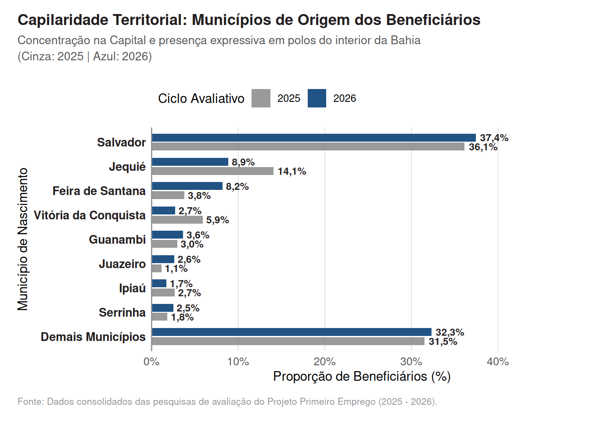
A análise dos polos originários aponta:
- Centralidade da Capital e Grandes Polos Regionais: A capital do Estado, Salvador, congrega mais de um terço dos nascimentos, passando de 36,1% em 2025 (257 beneficiários) para 37,4% em 2026 (329 beneficiários, +1,3 p.p.);
- Destaque do Médio Rio de Contas e Portal do Sertão: Jequié destaca-se com forte representatividade, abarcando 14,1% em 2025 (100 indivíduos) e 8,9% em 2026 (78 indivíduos). Feira de Santana, por sua vez, mais que dobrou sua participação proporcional em 2026, saltando de 3,8% (27) para 8,2% (72, ganho expressivo de +4,4 p.p.);
- Capilaridade nos Territórios de Identidade: Outros centros urbanos expressivos como Guanambi (3,6% em 2026), Vitória da Conquista (2,7%), Juazeiro (2,6%), Serrinha (2,2%) e Ipiaú (1,4%) reforçam a descentralização territorial do programa. O conjunto de outros municípios baianos e do interior agrega cerca de um terço de todo o contingente do programa.
5.3 Geografia da Residência dos Beneficiários
O município de moradia atual (q32) reflete a fixação territorial dos jovens e as demandas de habitação no entorno dos postos de estágio e trabalho. A Tabela 19 e a Figura 19 apresentam a concentração de residência.
| Município de Moradia | 2025 (N) | 2025 (%) | 2026 (N) | 2026 (%) | Variação (p.p.) |
|---|---|---|---|---|---|
| Salvador | 271 | 38,1% | 343 | 39,0% | +0.9 |
| Jequié | 105 | 14,8% | 92 | 10,5% | -4.3 |
| Feira de Santana | 31 | 4,4% | 75 | 8,5% | +4.2 |
| Vitória da Conquista | 60 | 8,4% | 23 | 2,6% | -5.8 |
| Guanambi | 24 | 3,4% | 37 | 4,2% | +0.8 |
| Juazeiro | 11 | 1,5% | 28 | 3,2% | +1.6 |
| Serrinha | 13 | 1,8% | 26 | 3,0% | +1.1 |
| Camaçari | 12 | 1,7% | 11 | 1,3% | -0.4 |
| Demais Municípios | 184 | 25,9% | 244 | 27,8% | +1.9 |
| Total | 711 | 100,0% | 879 | 100,0% | — |
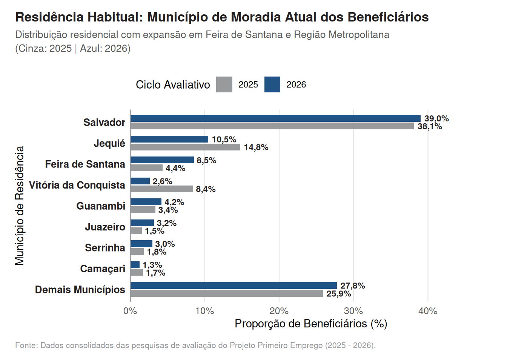
A distribuição residencial espelha a dinâmica de atração dos centros metropolitanos e polos de serviço:
- Estabilidade Residencial na Capital: Salvador abriga 38,1% dos residentes em 2025 (271 beneficiários) e 39,0% em 2026 (343 beneficiários);
- Polos Regionais do Interior: Jequié responde por 14,8% em 2025 e 10,5% em 2026, ao passo que Feira de Santana expandiu sua base residencial de 4,4% para 8,5% (75 moradores em 2026). Guanambi (4,2%), Juazeiro (3,2%), Vitória da Conquista (2,6%) e Serrinha (2,2%) completam os principais agrupamentos de domicílio dos participantes;
- Cidades Dormitório e Municípios Vizinhos: Os dados revelam que uma parcela de beneficiários reside em municípios limítrofes aos grandes centros (como Lauro de Freitas e Simões Filho na RMS, ou Jitaúna e Manoel Vitorino no entorno de Jequié), antecipando dinâmicas de deslocamento cotidiano para os locais de atuação.
5.4 Polos de Atuação Laboral e Alocação dos Postos de Trabalho
A localização do posto de trabalho (q33) define onde os serviços públicos são efetivamente prestados pelos técnicos do PPE. A Tabela 20 e a Figura 20 sintetizam os municípios que concentram os postos de lotação.
| Município de Atuação (Posto) | 2025 (N) | 2025 (%) | 2026 (N) | 2026 (%) | Variação (p.p.) |
|---|---|---|---|---|---|
| Salvador | 278 | 39,1% | 342 | 38,9% | -0.2 |
| Jequié | 110 | 15,5% | 92 | 10,5% | -5.0 |
| Feira de Santana | 32 | 4,5% | 87 | 9,9% | +5.4 |
| Vitória da Conquista | 60 | 8,4% | 28 | 3,2% | -5.3 |
| Guanambi | 26 | 3,7% | 36 | 4,1% | +0.4 |
| Juazeiro | 12 | 1,7% | 31 | 3,5% | +1.8 |
| Serrinha | 14 | 2,0% | 28 | 3,2% | +1.2 |
| Ipiaú | 26 | 3,7% | 16 | 1,8% | -1.8 |
| Demais Municípios | 153 | 21,5% | 219 | 24,9% | +3.4 |
| Total | 711 | 100,0% | 879 | 100,0% | — |
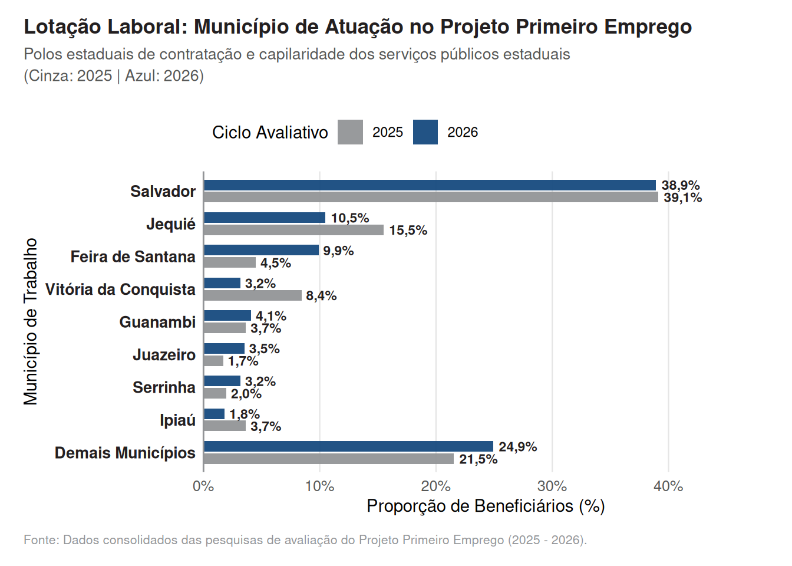
O mapa de alocação funcional demonstra um alinhamento direto com a infraestrutura do Estado:
- Sede dos Órgãos Centrais e Metrópole: Salvador concentra 39,1% dos postos em 2025 (278 vagas) e 38,9% em 2026 (342 vagas), em função da densidade de secretarias de Estado, fundações e hospitais de grande porte sediados na capital;
- Interiorização do Trabalho Técnico: Jequié concentrou 15,5% dos postos em 2025 e 10,5% em 2026 (com forte demanda do Hospital Geral Prado Valadares), enquanto Feira de Santana avançou de 4,5% para 9,9% (87 postos em 2026). Guanambi (4,1%), Juazeiro (3,5%) e Vitória da Conquista (3,2%) consolidam-se como polos estaduais estratégicos de prestação de serviços públicos.
5.5 Mobilidade Pendular e Integração Espacial Residência-Trabalho
O cruzamento entre o município de residência (q32) e o município de trabalho (q33) permite mensurar a mobilidade pendular (commuting), indicador socioespacial crucial que afeta diretamente a qualidade de vida, o estresse no trânsito e os custos com transporte público. A Tabela 21 e a Figura 21 expõem esse cruzamento nos dois anos avaliados.
| Padrão de Deslocamento Laboral | 2025 (N) | 2025 (%) | 2026 (N) | 2026 (%) | Variação (p.p.) |
|---|---|---|---|---|---|
| Trabalha no mesmo município de residência | 642 | 90,3% | 793 | 90,2% | -0,1 |
| Mobilidade pendular (intermunicipal) | 69 | 9,7% | 86 | 9,8% | +0,1 |
| Total | 711 | 100,0% | 879 | 100,0% | — |
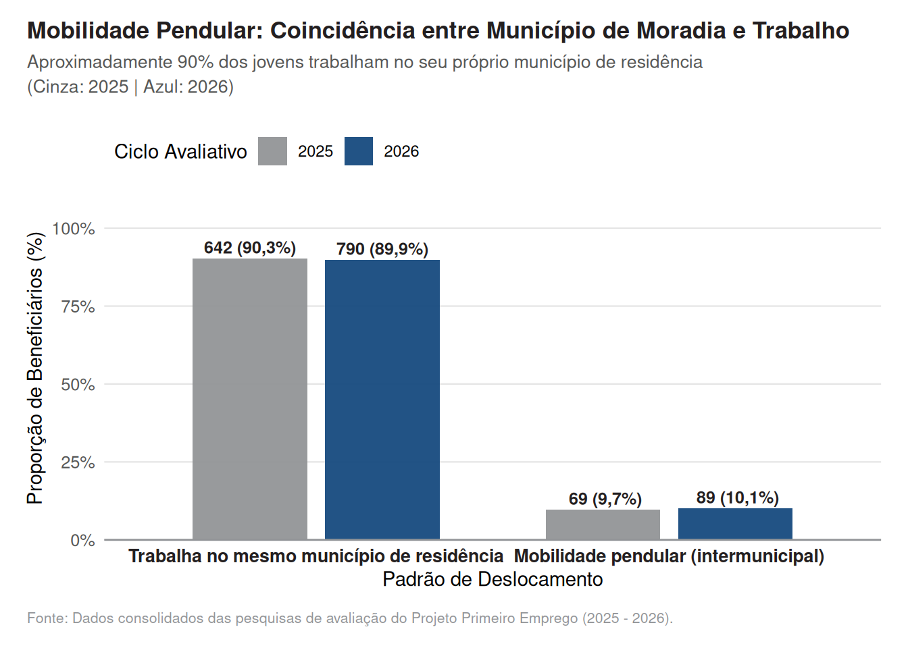
Os indicadores de mobilidade revelam uma estabilidade notável e altamente virtuosa:
- Estabilidade Excepcional da Permanência Local (~90%): A esmagadora maioria dos beneficiários atua no próprio município em que reside — 90,3% em 2025 (642 participantes) e 90,2% em 2026 (793 participantes, variação residual de -0,1 p.p.);
- Mobilidade Pendular Contida (~10%): Apenas 9,7% em 2025 (69 beneficiários) e 9,8% em 2026 (86 beneficiários) realizam comutação intermunicipal diária para trabalhar em postos do PPE;
- Benefícios para a Eficiência da Política Pública: A retenção de 90% dos jovens trabalhando no município onde moram constitui uma das maiores fortalezas logísticas e sociais do modelo de alocação do PPE. Essa proximidade geográfica reduz significativamente a fadiga com deslocamentos prolongados, atenua os custos estaduais com auxílio-transporte e estimula a fixação do capital técnico nos próprios territórios de moradia, favorecendo a economia local.
5.6 Estrutura de Lotação e Órgãos da Administração Estadual
A tipologia das unidades institucionais de alocação (q34) indica quais setores da administração pública direta e indireta absorvem a mão de obra técnica dos jovens. A Tabela 22 e a Figura 22 demonstram o perfil institucional dos postos.
| Tipo de Unidade / Órgão de Lotação | 2025 (N) | 2025 (%) | 2026 (N) | 2026 (%) | Variação (p.p.) |
|---|---|---|---|---|---|
| Outras Unidades de Saúde e Educação | 247 | 34,7% | 278 | 31,6% | -3,1 |
| Hospitais Gerais e Especializados | 145 | 20,4% | 209 | 23,8% | +3,4 |
| Bases Regionais / Policlínicas | 82 | 11,5% | 133 | 15,1% | +3,6 |
| Maternidades Estaduais | 72 | 10,1% | 82 | 9,3% | -0,8 |
| SESAB (Administração Central) | 60 | 8,4% | 70 | 8,0% | -0,4 |
| HGPV (Hospital Prado Valadares) | 102 | 14,3% | 64 | 7,3% | -7,0 |
| HGRS (Hospital Roberto Santos) | 3 | 0,4% | 43 | 4,9% | +4,5 |
| Total | 711 | 100,0% | 879 | 100,0% | — |
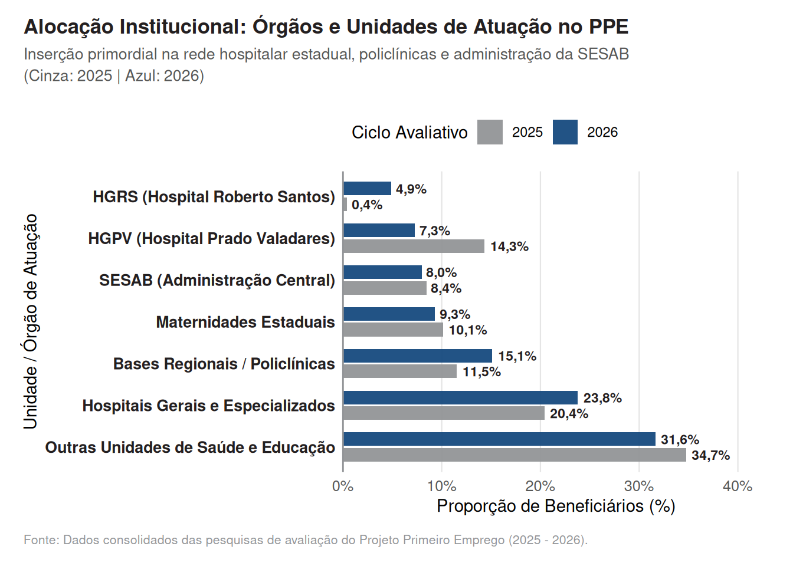
A inserção institucional dos técnicos evidencia o protagonismo da saúde pública:
- Hospitais Gerais e Especializados: Esta categoria hospitalar congregou 20,4% em 2025 (145 postos) e ampliou-se para 23,8% em 2026 (209 postos, +3,4 p.p.), destacando unidades como o Hospital Geral Roberto Santos (HGRS), Hospital Geral do Estado (HGE), Hospital Menandro de Faria e Hospital Geral Clériston Andrade;
- Interiorização em Policlínicas e Maternidades: As Bases Regionais de Saúde e Policlínicas Regionais saltaram de 11,5% (82) para 15,1% (133 postos em 2026, ganho de +3,6 p.p.), consolidando o suporte técnico às unidades de saúde consorciadas no interior. Maternidades estaduais responderam por 9,3% a 10,1% das vagas;
- Administração Central e Destaque do HGPV: A administração central da SESAB manteve estabilidade em cerca de 8,0% dos postos (60 em 2025 e 70 em 2026). O Hospital Geral Prado Valadares (HGPV) em Jequié representou 14,3% dos postos em 2025 e 7,3% em 2026, refletindo ajustes contratuais locais. O conjunto de outras unidades de saúde e postos escolares absorve cerca de 32% a 35% do total de respondentes.
5.7 Dinâmica Temporal e Coexistência de Coortes de Ingresso
A análise do ano de ingresso formal no PPE (q22) revela a rotatividade contratual e a proporção de beneficiários veteranos em relação aos novos ingressantes. A Tabela 23 e a Figura 23 comparam as coortes ativas nos dois períodos.
| Ano de Entrada no PPE | 2025 (N) | 2025 (%) | 2026 (N) | 2026 (%) | Variação (p.p.) |
|---|---|---|---|---|---|
| Antes de 2024 | 0 | 0,0% | 25 | 2,8% | +2,8 |
| 2024 | 537 | 75,5% | 415 | 47,2% | -28,3 |
| 2025 | 174 | 24,5% | 271 | 30,8% | +6,3 |
| 2026 | 0 | 0,0% | 168 | 19,1% | +19,1 |
| Total | 711 | 100,0% | 879 | 100,0% | — |
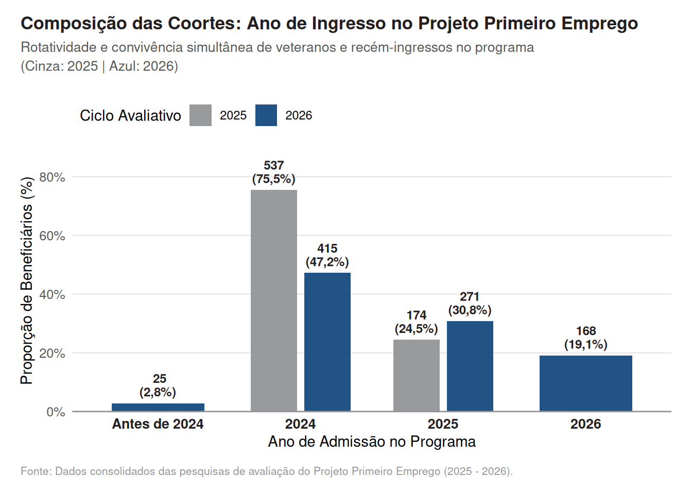
A evolução das coortes atesta a dinâmica de renovação e continuidade do programa:
- Estrutura da Amostra de 2025: O ciclo de 2025 era majoritariamente composto pela coorte ingressante em 2024 (75,5%, 537 beneficiários), complementada pela turma recém-ingressa em 2025 (24,5%, 174 beneficiários);
- Composição e Coexistência no Ciclo de 2026: Em 2026, verifica-se uma composição intergeracional equilibrada no programa: a coorte de 2024 permaneceu com 47,2% (415 técnicos, cumprindo seu segundo ano de contrato de até 24 meses), os ingressantes de 2025 representaram 30,8% (271 técnicos) e os novos convocados de 2026 já respondiam por 19,1% da base ativa (168 beneficiários). Um grupo residual de 2,8% (25 indivíduos) registrou admissão anterior a 2024;
- Robustez do Modelo Contratual: Esse perfil demonstra que o PPE opera com um ciclo virtuoso contínuo de renovação: turmas veteranas atingem a maturidade ocupacional e transmitem conhecimentos tácitos aos novos ingressantes antes de se desligarem ao término do contrato de 24 meses, garantindo fluidez e sustentabilidade operacional aos serviços públicos estaduais.
6 Contexto Socioeconômico, Condições de Moradia e Transição de Renda
Esta seção investiga a dimensão material e o impacto socioeconômico direto gerado pelo Projeto Primeiro Emprego (PPE) sobre as condições de vida dos beneficiários e de seus núcleos familiares. Analisam-se as estruturas de coabitação residencial, a densidade familiar, o protagonismo financeiro dos jovens no sustento doméstico, o ambiente de moradia (urbano versus rural), a inflexão nas faixas de renda familiar comparando o momento prévio e posterior à inserção no programa, a sinergia com programas sociais de transferência de renda e a aquisição de bens duráveis e melhorias patrimoniais.
6.1 Estrutura de Coabitação e Arranjos Domiciliares
A configuração do arranjo domiciliar (q38) indica a rede de dependência ou suporte familiar em que o beneficiário está inserido. A Tabela 24 sintetiza os formatos de coabitação nos ciclos avaliativos de 2025 e 2026.
| Arranjo Domiciliar de Coabitação | 2025 (N) | 2025 (%) | 2026 (N) | 2026 (%) | Variação (p.p.) |
|---|---|---|---|---|---|
| Com pais e/ou parentes | 347 | 48,8% | 438 | 49,8% | +1.0 |
| Com cônjuge e/ou filhos | 204 | 28,7% | 235 | 26,7% | -2.0 |
| Sozinho(a) em casa/apto | 146 | 20,5% | 188 | 21,4% | +0.9 |
| Com amigos / república | 4 | 0,6% | 6 | 0,7% | +0.1 |
| Outros arranjos habitacionais | 10 | 1,4% | 12 | 1,4% | -0.0 |
| Total | 711 | 100,0% | 879 | 100,0% | — |
A visualização gráfica dos tipos de arranjo é apresentada na Figura 24.
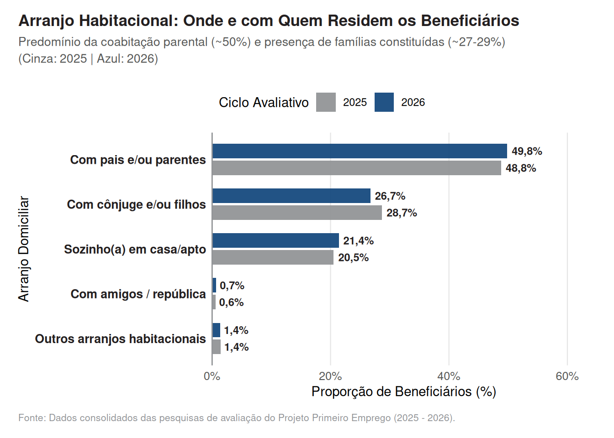
A análise dos arranjos domiciliares revela características centrais da vida doméstica dos jovens:
- Predomínio da Coabitação com Pais e Parentes: Praticamente metade dos beneficiários reside com seus genitores e familiares — 48,8% em 2025 (347 indivíduos) e 49,8% em 2026 (438 indivíduos), refletindo o padrão sociológico brasileiro de permanência na moradia de origem durante a juventude;
- Constituição de Núcleos Familiares Próprios: Cerca de mais de um quarto dos participantes reside com cônjuge e/ou filhos — 28,7% em 2025 (204 respondentes) e 26,7% em 2026 (235 respondentes), dialogando diretamente com a presença de beneficiários com mais de 25 anos e chefes de família;
- Moradia Unipessoal e Autonomia Residencial: A proporção de indivíduos que moram sozinhos manteve estabilidade em torno de um quinto da amostra — 20,5% em 2025 (146 jovens) e 21,4% em 2026 (188 jovens), indicando que os rendimentos do programa viabilizam a subsistência independente para expressiva parcela dos egressos. Arranjos coletivos (repúblicas/amigos) e outros formatos somam menos de 2,1%.
6.2 Densidade Domiciliar e Número de Familiares Coabitantes
A densidade de coabitantes (q39) afere o tamanho do domicílio e o grau de pressão econômica sobre a renda familiar. A Tabela 25 e a Figura 25 apresentam a distribuição do número de familiares residentes.
| Número de Familiares Coabitantes | 2025 (N) | 2025 (%) | 2026 (N) | 2026 (%) | Variação (p.p.) |
|---|---|---|---|---|---|
| Mora sozinho(a) (0) | 89 | 12,5% | 118 | 13,4% | +0.9 |
| 1 coabitante | 121 | 17,0% | 171 | 19,5% | +2.4 |
| 2 coabitantes | 207 | 29,1% | 224 | 25,5% | -3.6 |
| 3 coabitantes | 149 | 21,0% | 184 | 20,9% | -0.0 |
| 4 coabitantes | 92 | 12,9% | 113 | 12,9% | -0.1 |
| 5 coabitantes | 30 | 4,2% | 39 | 4,4% | +0.2 |
| 6 ou mais coabitantes | 23 | 3,2% | 30 | 3,4% | +0.2 |
| Total | 711 | 100,0% | 879 | 100,0% | — |
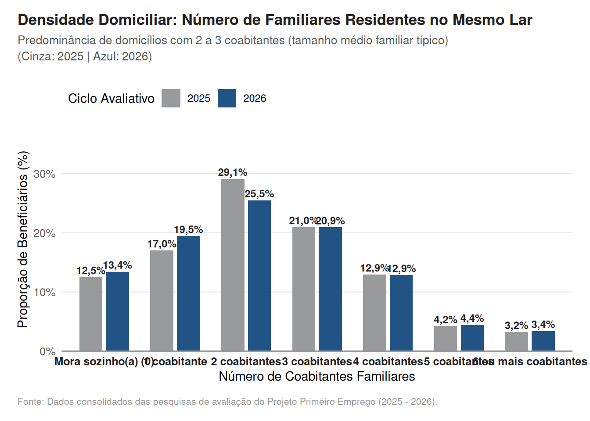
Os indicadores demográficos domiciliares apontam:
- Núcleos Familiares Médios: A configuração modal é de lares com 2 ou 3 coabitantes, que reuniram 50,1% em 2025 e 46,4% em 2026, delineando núcleos familiares típicos de 3 a 4 membros totais;
- Domicílios Unipessoais e Pequenos: Cerca de 12,5% em 2025 e 13,4% em 2026 residem estritamente sós (0 coabitantes), enquanto lares de apenas 2 pessoas (1 coabitante) passaram de 17,0% para 19,5%;
- Famílias Extensas e Alta Vulnerabilidade: Lares com 4 ou mais familiares coabitantes perfazem cerca de 17% a 18% da base amostral, representando lares extensos onde o impacto distributivo da bolsa ou remuneração do PPE adquire caráter vital de proteção social básica contra a insegurança alimentar.
6.3 Protagonismo Financeiro e Papel no Sustento Domiciliar
A aferição do papel econômico desempenhado pelo beneficiário no domicílio (q41) desmistifica a visão reducionista do rendimento jovem como mero ganho secundário. A Tabela 26 e a Figura 26 detalham essa responsabilidade.
| Papel Financeiro no Domicílio | 2025 (N) | 2025 (%) | 2026 (N) | 2026 (%) | Variação (p.p.) |
|---|---|---|---|---|---|
| Contribui com o sustento familiar | 348 | 48,9% | 404 | 46,0% | -3.0 |
| Sustenta-se de forma autônoma | 135 | 19,0% | 189 | 21,5% | +2.5 |
| Principal responsável pelo sustento | 144 | 20,3% | 171 | 19,5% | -0.8 |
| Tem renda, mas necessita de ajuda | 57 | 8,0% | 87 | 9,9% | +1.9 |
| Gastos financiados pela família | 27 | 3,8% | 28 | 3,2% | -0.6 |
| Total | 711 | 100,0% | 879 | 100,0% | — |
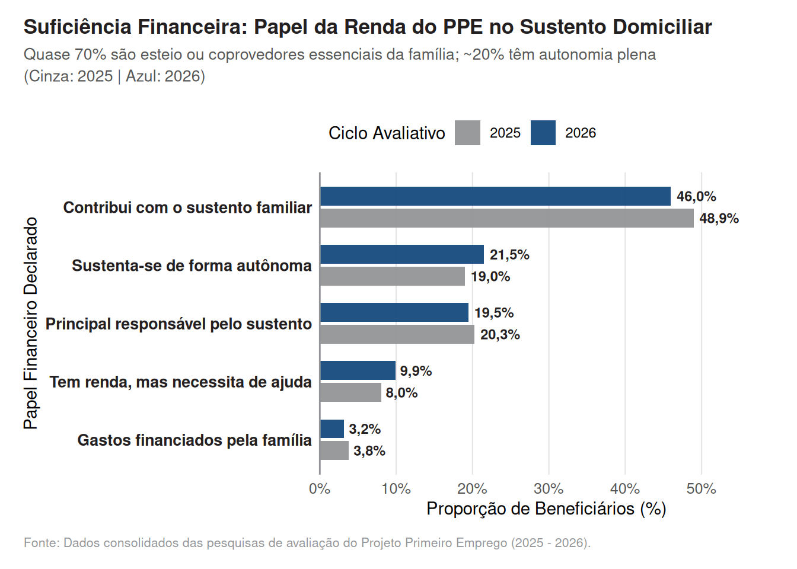
Os resultados empíricos atestam o papel econômico primordial dos beneficiários:
- Provedores e Coprovedores Primários do Lar (~66% a 70%): Quase metade dos respondentes declara que contribui ativamente com o sustento familiar (48,9% em 2025 e 46,0% em 2026), enquanto cerca de um quinto (20,3% em 2025 e 19,5% em 2026) assume o papel de principal responsável pelo sustento da família;
- Autonomia Econômica Plena: Beneficiários que se sustentam de forma plenamente autônoma cresceram de 19,0% (135 jovens) em 2025 para 21,5% (189 jovens) em 2026 (+2,5 p.p.);
- Caráter Estrutural da Renda: Apenas 3,2% a 3,8% dos beneficiários afirmam ter seus gastos integralmente financiados pela família. Somando provedores principais, coprovedores e independentes, constata-se que mais de 87% dos participantes dependem diretamente da renda do PPE para assegurar sua subsistência ou a de seus dependentes.
6.4 Ambiente de Moradia e Acesso Territorial (Urbano vs. Rural)
A classificação da localidade de moradia (q42) permite verificar o alcance do programa sobre populações do campo e da periferia rural, bem como os desafios de transporte. A Tabela 27 e a Figura 27 detalham essa tipologia.
| Zona de Moradia e Condição de Acesso | 2025 (N) | 2025 (%) | 2026 (N) | 2026 (%) | Variação (p.p.) |
|---|---|---|---|---|---|
| Zona Urbana | 635 | 89,3% | 728 | 82,8% | -6.5 |
| Zona Rural (Deslocamento regular) | 52 | 7,3% | 109 | 12,4% | +5.1 |
| Zona Rural (Deslocamento longo ≥2h) | 24 | 3,4% | 42 | 4,8% | +1.4 |
| Total | 711 | 100,0% | 879 | 100,0% | — |
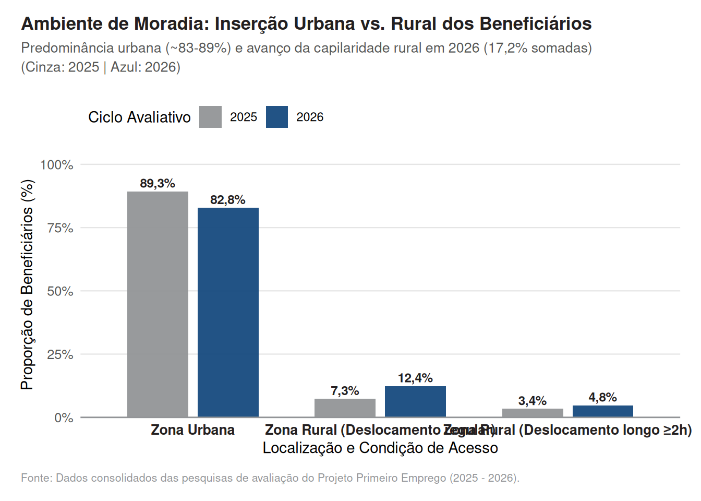
Os achados territoriais demonstram uma crescente inclusão do meio rural:
- Predominância Urbana: A maioria dos participantes reside na zona urbana — 89,3% em 2025 (635 beneficiários) e 82,8% em 2026 (728 beneficiários);
- Expansão da População Rural (+6,5 p.p.): A participação de residentes em zonas rurais cresceu substancialmente em 2026, saltando de 10,7% (76 respondentes) para 17,2% (151 respondentes), distribuídos entre moradia rural com deslocamento regular (12,4%) e zona rural com deslocamento diário prolongado superior a 2 horas (4,8%, 42 jovens);
- Sensibilidade Operacional: O aumento de beneficiários residentes no campo impõe desafios logísticos de pontualidade e custos de comutação que devem ser monitorados pelas equipes de gestão do PPE, garantindo que o transporte rural-urbano não comprometa a frequência aos postos.
6.5 Ponto de Partida: Renda Familiar Pré-Ingresso no Programa
O diagnóstico da renda familiar antes da entrada no PPE (q43) revela o perfil socioeconômico de origem dos beneficiários e o grau de vulnerabilidade que a política se propõe a mitigar. A Tabela 28 e a Figura 28 expõem essa linha de base inicial.
| Faixa de Renda Familiar Pré-PPE | 2025 (N) | 2025 (%) | 2026 (N) | 2026 (%) | Variação (p.p.) |
|---|---|---|---|---|---|
| Nenhuma renda | 168 | 23,6% | 215 | 24,5% | +0.8 |
| Até 1,5 Salários Mínimos | 410 | 57,7% | 504 | 57,3% | -0.3 |
| De 1,5 a 3 Salários Mínimos | 115 | 16,2% | 142 | 16,2% | -0.0 |
| De 3 a 4,5 Salários Mínimos | 16 | 2,3% | 16 | 1,8% | -0.4 |
| Acima de 4,5 Salários Mínimos | 2 | 0,3% | 2 | 0,2% | -0.1 |
| Total | 711 | 100,0% | 879 | 100,0% | — |
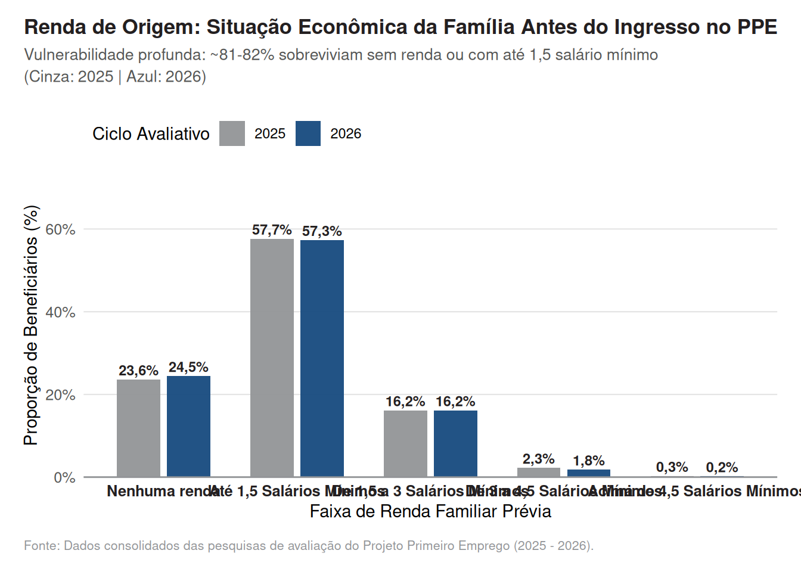
A linha de base confirma a excelente focalização do programa nos estratos mais empobrecidos:
- Extrema Pobreza e Ausência de Renda: Quase um quarto das famílias não possuía nenhuma renda declarada antes do ingresso no programa — 23,6% em 2025 (168 famílias) e 24,5% em 2026 (215 famílias);
- Vulnerabilidade Predominante (Até 1,5 Salário Mínimo): O estrato de famílias com renda de até 1,5 salário mínimo congrega a maioria absoluta em ambos os períodos — 57,7% em 2025 (410 lares) e 57,3% em 2026 (504 lares);
- Focalização Social Consolidada (81% a 82%): Somando os sem renda àqueles com até 1,5 SM, constata-se que mais de 81% dos beneficiários provinham de lares situados abaixo ou no limiar da pobreza monetária, demonstrando que o PPE cumpre rigorosamente sua função distributiva voltada aos egressos mais vulneráveis da escola pública.
6.6 Renda Familiar Atual com a Remuneração do PPE
A mensuração da renda familiar vigente (q40) permite constatar a nova estratificação socioeconômica alcançada após o recebimento dos proventos formais do programa. A Tabela 29 e a Figura 29 apresentam a nova configuração de rendimento.
| Faixa de Renda Familiar Atual | 2025 (N) | 2025 (%) | 2026 (N) | 2026 (%) | Variação (p.p.) |
|---|---|---|---|---|---|
| Nenhuma renda | 48 | 6,8% | 64 | 7,3% | +0.5 |
| Até 1,5 Salários Mínimos | 349 | 49,1% | 437 | 49,7% | +0.6 |
| De 1,5 a 3 Salários Mínimos | 280 | 39,4% | 331 | 37,7% | -1.7 |
| De 3 a 4,5 Salários Mínimos | 27 | 3,8% | 41 | 4,7% | +0.9 |
| Acima de 4,5 Salários Mínimos | 7 | 1,0% | 6 | 0,7% | -0.3 |
| Total | 711 | 100,0% | 879 | 100,0% | — |
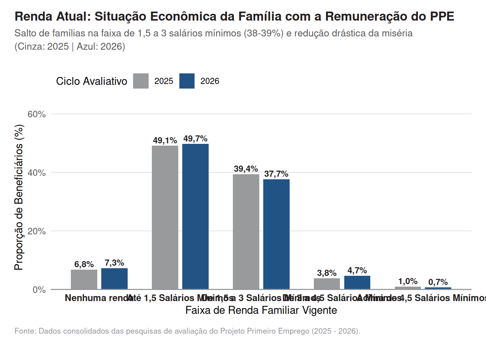
Os novos patamares de renda refletem um imediato reposicionamento econômico dos lares:
- Arrefecimento dos Domicílios Sem Renda: A proporção de famílias sem qualquer renda desaba para 6,8% em 2025 (48 lares) e 7,3% em 2026 (64 lares);
- Elevação para a Faixa Intermediária (1,5 a 3 Salários Mínimos): A classe de rendimento intermediário expande-se expressivamente, congregando 39,4% das famílias em 2025 (280 lares) e 37,7% em 2026 (331 lares);
- Redução Proporcional da Faixa Básica: O estrato de até 1,5 SM reduz-se de 57,5% para cerca de 49% a 50%, atestando a migração massiva de domicílios para patamares superiores de renda familiar.
6.7 Transição e Mobilidade de Renda Familiar (Antes vs. Atual)
O confronto analítico longitudinal entre a situação prévia (q43) e o momento atual (q40) evidencia a magnitude do salto distributivo promovido pelo PPE. A Tabela 30 sintetiza a matriz de transição nos dois ciclos avaliativos.
| Faixa de Renda Familiar | 2025 Antes (%) | 2025 Atual (%) | 2025 Variação (p.p.) | 2026 Antes (%) | 2026 Atual (%) | 2026 Variação (p.p.) |
|---|---|---|---|---|---|---|
| Nenhuma renda | 23,6% | 6,8% | -16,9 | 24,5% | 7,3% | -17,2 |
| Até 1,5 Salários Mínimos | 57,7% | 49,1% | -8,6 | 57,3% | 49,7% | -7,7 |
| De 1,5 a 3 Salários Mínimos | 16,2% | 39,4% | +23,2 | 16,2% | 37,7% | +21,5 |
| De 3 a 4,5 Salários Mínimos | 2,3% | 3,8% | +1,5 | 1,8% | 4,7% | +2,9 |
| Acima de 4,5 Salários Mínimos | 0,3% | 1,0% | +0,7 | 0,2% | 0,7% | +0,4 |
| Total | 100,0% | 100,0% | — | 100,0% | 100,0% | — |
O impacto do programa na ascensão socioeconômica é ilustrado visualmente na Figura 30.
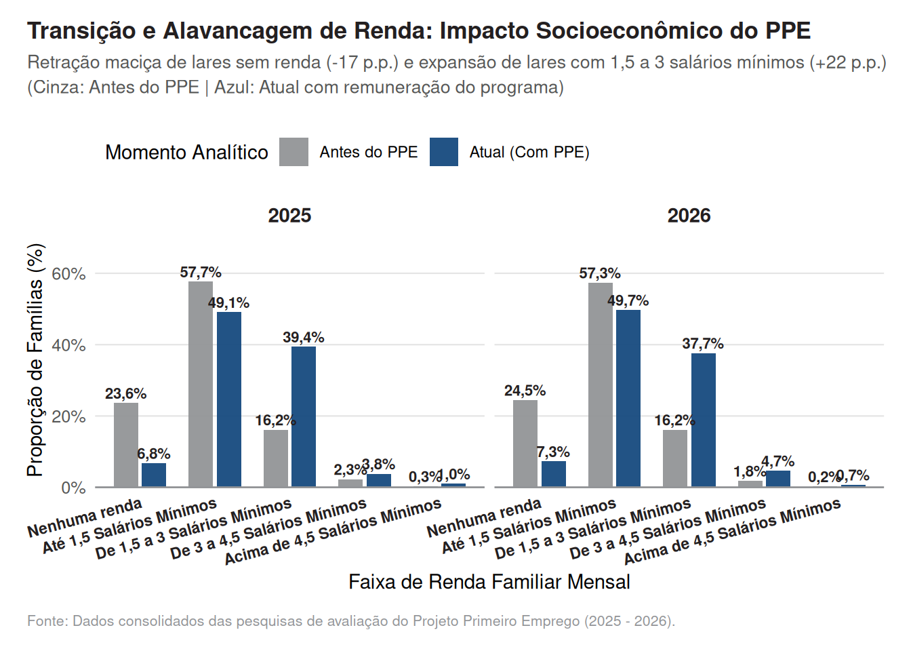
O efeito alavanca sobre os domicílios é inequívoco e estruturante:
- Queda Vertiginosa na Extrema Pobreza (-17 p.p.): A faixa de domicílios desprovidos de renda registra uma contração drástica de -16,9 p.p. em 2025 (de 23,6% para 6,8%) e de -17,2 p.p. em 2026 (de 24,5% para 7,3%), resgatando centenas de famílias da privação material absoluta;
- Expansão da Classe Intermediária (+22 p.p. a +23 p.p.): A faixa de 1,5 a 3 salários mínimos dá um salto espetacular: passa de 16,2% para 39,4% em 2025 (+23,2 p.p.) e de 16,2% para 37,7% em 2026 (+21,5 p.p.);
- Evolução nas Faixas Superiores: As faixas acima de 3 salários mínimos ampliam sua participação de ~2,0% para cerca de 4,8% a 5,4% dos lares;
- Significado para a Política Pública: O PPE demonstra capacidade comprovada de gerar mobilidade socioeconômica ascendente imediata, constituindo-se não apenas em um mecanismo de aprendizado laboral, mas em uma vigorosa política de distribuição de renda e combate às desigualdades no Estado da Bahia.
6.8 Sinergia com Programas Sociais de Transferência de Renda
A análise sobre o recebimento de benefícios sociais (q44) permite verificar a articulação entre as redes de seguridade social federal e a política de primeiro emprego estadual. A Tabela 31 e a Figura 31 apresentam a cobertura de benefícios.
Os dados demonstram expressiva convergência de proteção social:
- Sinergia Estratégica com o Bolsa Família (22% a 25%): Em 2025, 21,9% das famílias (156 lares) recebiam o Bolsa Família; em 2026, esse índice ampliou-se para 25,4% (223 lares, avanço de +3,5 pontos percentuais). Essa constatação evidencia que o PPE atinge exatamente o público-alvo prioritário das políticas de combate à miséria, viabilizando uma porta de saída sustentável da vulnerabilidade via qualificação formal;
- Benefício de Prestação Continuada (BPC/LOAS): Presente em 3,5% das famílias em 2025 e 2,6% em 2026, sinalizando a presença de idosos e pessoas com deficiência sob os cuidados do núcleo familiar do beneficiário;
- Independência de Transferências Monetárias: Cerca de 70% a 73% das famílias não recebiam benefícios de transferência direta, indicando que o PPE ampara uma faixa de trabalhadores informais e vulneráveis que frequentemente não se qualificam para benefícios assistenciais, mas necessitam de esteio para a emancipação econômica.
6.9 Acesso a Bens Duráveis e Conquistas Materiais
A aquisição de bens duráveis e itens de conforto material (q65) traduz a conversão da renda monetária do PPE em melhoria palpável da qualidade de vida e inclusão digital. A Tabela 32 e a Figura 32 sintetizam os bens conquistados pelos participantes.
| Tipo de Bem Adquirido / Conquista Material | 2025 (N) | 2025 (%) | 2026 (N) | 2026 (%) | Variação (p.p.) |
|---|---|---|---|---|---|
| Eletrodomésticos e Móveis para o Lar | 278 | 39,1% | 309 | 35,2% | -3.9 |
| Tecnologia / Comunicação (Celular/PC) | 231 | 32,5% | 296 | 33,7% | +1.2 |
| Veículo / Transporte (Moto/Carro) | 56 | 7,9% | 86 | 9,8% | +1.9 |
| Diversos bens e conquistas | 50 | 7,0% | 57 | 6,5% | -0.5 |
| Melhoria Habitacional / Reforma da Casa | 13 | 1,8% | 11 | 1,3% | -0.6 |
| Alimentação e Itens Pessoais | 3 | 0,4% | 6 | 0,7% | +0.3 |
| Não adquiriu novos bens | 72 | 10,1% | 108 | 12,3% | +2.2 |
| Não informado | 8 | 1,1% | 6 | 0,7% | -0.4 |
| Total | 711 | 100,0% | 879 | 100,0% | — |
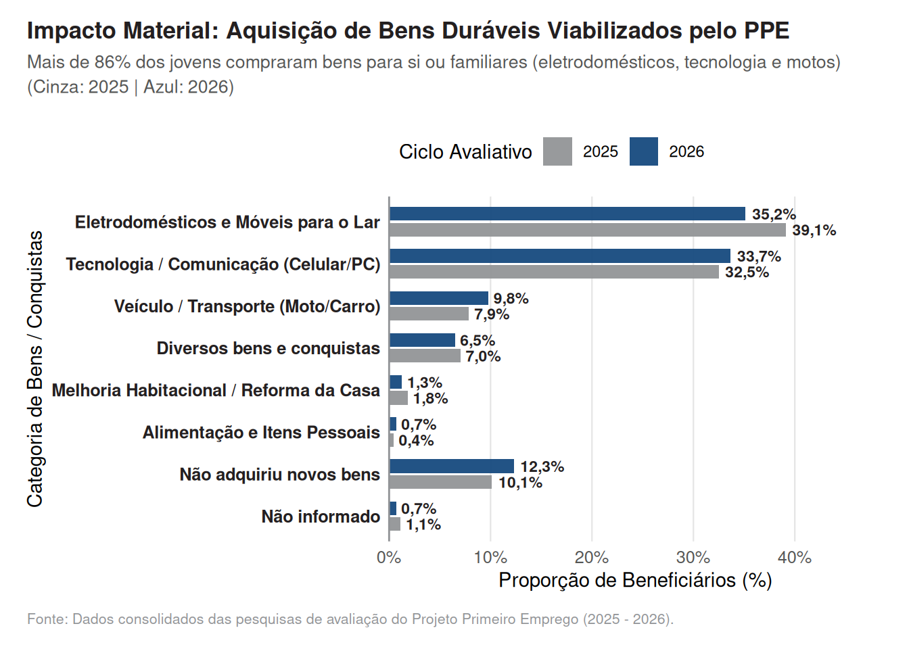
A materialização dos ganhos de renda demonstra impactos profundos na vida doméstica:
- Eletrodomésticos e Equipamentos para o Lar: A aquisição de móveis, geladeiras, fogões e máquinas de lavar liderou as conquistas em ambos os anos, representando 39,1% em 2025 (278 jovens) e 35,2% em 2026 (309 jovens), promovendo bem-estar e alívio do trabalho doméstico não remunerado;
- Inclusão Digital e Bens Tecnológicos (Celulares e Computadores): A compra de computadores, notebooks e smartphones de maior capacidade representou 32,5% em 2025 e avançou para 33,7% em 2026 (296 beneficiários). Esse investimento viabiliza a continuidade dos estudos universitários e a conectividade técnica dos egressos;
- Mobilidade e Autonomia com Veículos: A aquisição de meios de transporte próprios (notadamente motocicletas) aumentou de 7,9% (56) para 9,8% (86 beneficiários em 2026, ganho de +1,9 p.p.), facilitando o deslocamento diário e ampliando as oportunidades de renda;
- Reformas Habitacionais e Conquistas Múltiplas: Beneficiários que realizaram reformas na moradia somam 1,3% a 1,8%, enquanto aqueles que adquiriram múltiplos bens simultaneamente totalizam 6,5% a 7,0%;
- Conclusão Socioeconômica: A capacidade de transformar remuneração em patrimônio durável, conforto residencial e ferramentas tecnológicas confirma que o PPE proporciona emancipação cidadã autêntica e elevação concreta do padrão de vida das juventudes baianas.
7 Inserção Laboral Prévia, Condições de Trabalho e Clima Organizacional
Esta seção aprofunda a experiência produtiva dos beneficiários, contrapondo a percepção subjetiva de primeiro emprego ao histórico de informalidade prévia, e avalia a qualidade da experiência funcional no âmbito do Projeto Primeiro Emprego (PPE). São analisadas as condições ergonômicas e estruturais dos postos de trabalho, o apoio organizacional ao plano de carreira, a adequação dos recursos tecnológicos, a atmosfera do clima interpessoal, o nível de exigência das rotinas, a aquisição de repertório cultural e valores cívicos e, fundamentalmente, a aderência técnica entre a formação escolar prévia e a prática laboral cotidiana.
7.1 O Mito do Primeiro Emprego e a Declaração de Experiência Formal
A indagação inicial sobre a existência de trabalho anterior (q29) capta a representação social que o jovem possui sobre sua trajetória produtiva no mercado regulamentado. A Tabela 33 e a Figura 33 apresentam a distribuição desta autopercepção formal.
| Já Trabalhou Antes do PPE? | 2025 (N) | 2025 (%) | 2026 (N) | 2026 (%) | Variação (p.p.) |
|---|---|---|---|---|---|
| Não (Primeiro Emprego Declarado) | 454 | 63,9% | 552 | 62,8% | -1,1 |
| Sim (Experiência Anterior) | 257 | 36,1% | 327 | 37,2% | +1,1 |
| Total | 711 | 100,0% | 879 | 100,0% | — |
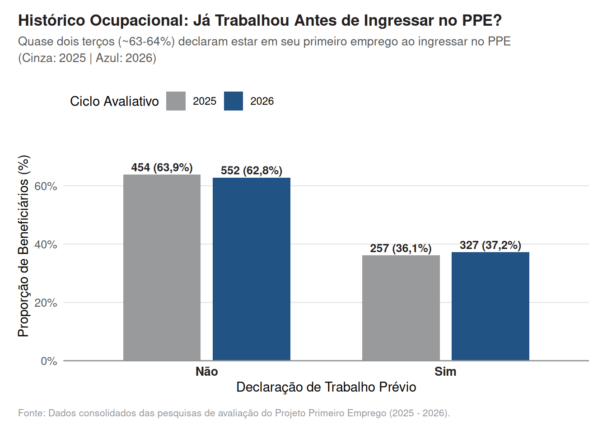
Os resultados refletem a identidade formal atribuída à política pública:
- Predomínio da Autopercepção de Primeiro Emprego: Em ambos os ciclos, a sólida maioria dos participantes declara que o PPE constitui sua primeira experiência de trabalho — 63,9% em 2025 (454 beneficiários) e 62,8% em 2026 (552 beneficiários);
- Parcela com Vínculo Prévio Declarado: Cerca de 36,1% em 2025 (257) e 37,2% em 2026 (327) indicam já ter exercido atividade profissional antes do ingresso no programa, refletindo o contingente que ingressa após passagens por outros contratos temporários ou ocupações de menor qualificação.
7.2 O Trabalho Oculto: Incursão Prévia no Mercado Informal
Quando o instrumento de pesquisa investiga a trajetória produtiva ampla, incluindo expressamente atividades informais, autônomas e “bicos” (q60), a realidade empírica do trabalho juvenil se revela de forma substancialmente distinta. A Tabela 34 e a Figura 34 evidenciam essa dimensão oculta da inserção ocupacional.
| Já Havia Trabalhado (Mesmo Informalmente)? | 2025 (N) | 2025 (%) | 2026 (N) | 2026 (%) | Variação (p.p.) |
|---|---|---|---|---|---|
| Sim (Experiência Informal/Bicos) | 585 | 82,3% | 708 | 80,5% | -1,8 |
| Não (Inexperiência Absoluta) | 126 | 17,7% | 171 | 19,5% | +1,8 |
| Total | 711 | 100,0% | 879 | 100,0% | — |
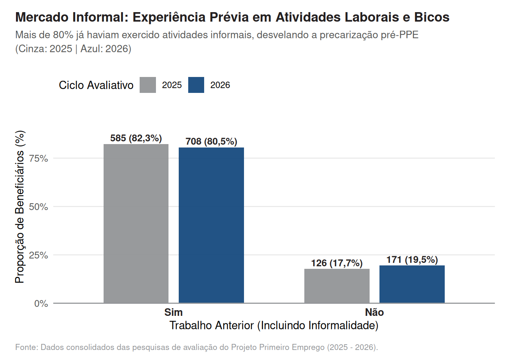
A revelação empírica da pré-ocupação informal desvela aspectos cruciais:
- Massiva Experiência Produtiva Prévia (>80% a 82%): A esmagadora maioria dos participantes já havia exercido atividade produtiva antes do PPE — 82,3% em 2025 (585 jovens) e 80,5% em 2026 (708 jovens);
- Inexperiência Absoluta Restrita a um Quinto: Apenas 17,7% em 2025 (126 indivíduos) e 19,5% em 2026 (171 indivíduos) nunca haviam realizado qualquer modalidade de trabalho;
- O Paradoxo do Reconhecimento Laboral: O contraste entre os 63% que declararam “não ter trabalhado” em
q29e os mais de 80% que admitem ter exercido atividades emq60atesta um traço marcante da sociologia do trabalho brasileira: para a juventude das periferias e do interior, o trabalho informal não é concebido com dignidade de “emprego”, reservando-se este estatuto social exclusivamente à ocupação formal respaldada por direitos trabalhistas e carteira assinada.
7.3 Taxonomia da Formalização: O PPE como Ponte Emancipatória
O cruzamento sistemático entre as variáveis q29 e q60 permite erigir uma taxonomia analítica rigorosa da inserção laboral dos beneficiários. A Tabela 35 e a Figura 35 mapeiam os quatro perfis de transição identificados na base empírica.
| Taxonomia da Trajetória Laboral Pré-PPE | 2025 (N) | 2025 (%) | 2026 (N) | 2026 (%) | Variação (p.p.) |
|---|---|---|---|---|---|
| Primeiro emprego formal (com informalidade prévia) | 339 | 47,7% | 393 | 44,7% | -3.0 |
| Inserção laboral prévia (formal e informal) | 246 | 34,6% | 315 | 35,8% | +1.2 |
| Inexperiência absoluta (nunca trabalhou) | 115 | 16,2% | 159 | 18,1% | +1.9 |
| Histórico formal exclusivo | 11 | 1,5% | 12 | 1,4% | -0.2 |
| Total | 711 | 100,0% | 879 | 100,0% | — |
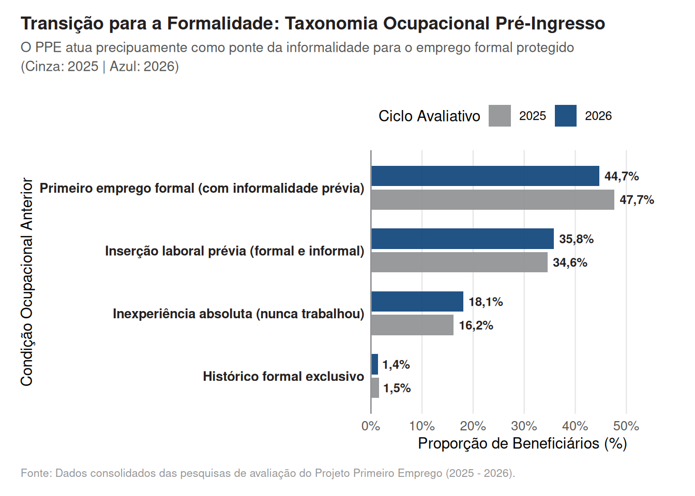
A taxonomia evidencia a função central desempenhada pelo PPE na regulação do trabalho juvenil:
- Ponte da Informalidade para o Primeiro Emprego Formal (45% a 48%): O maior grupo individual é constituído por jovens que trabalhavam na precariedade informal e encontram no PPE sua primeira oportunidade formal com carteira assinada e garantias previdenciárias — 47,7% em 2025 (339 participantes) e 44,7% em 2026 (393 participantes). Para este segmento, o PPE opera como divisor de águas civilizatório;
- Inserção Laboral Híbrida e Requalificação (35% a 36%): Beneficiários com histórico prévio tanto formal quanto informal somam 34,6% em 2025 (246) e 35,8% em 2026 (315), buscando no programa a consolidação de sua carreira técnica especializada;
- Inexperiência Absoluta Primária (16% a 18%): Jovens que vivenciam no PPE a primeira incursão laboral de suas vidas totalizam 16,2% em 2025 (115) e 18,1% em 2026 (159);
- Histórico Formal Estrito (Residual de ~1,5%): Indivíduos com histórico prévio exclusivamente formal representam 1,4% a 1,5% da amostra.
7.4 Condições Materiais e Adequação das Instalações Físicas
A qualidade do espaço físico onde os técnicos desempenham suas funções (q49) é determinante para o bem-estar ocupacional, produtividade e saúde do trabalhador. A Tabela 36 e a Figura 36 avaliam a infraestrutura dos postos.
| Adequação das Instalações Físicas | 2025 (N) | 2025 (%) | 2026 (N) | 2026 (%) | Variação (p.p.) |
|---|---|---|---|---|---|
| Sim, todas | 340 | 47,8% | 400 | 45,5% | -2.3 |
| Sim, a maior parte | 267 | 37,6% | 351 | 39,9% | +2.4 |
| Somente algumas | 95 | 13,4% | 115 | 13,1% | -0.3 |
| Nenhuma | 9 | 1,3% | 13 | 1,5% | +0.2 |
| Total | 711 | 100,0% | 879 | 100,0% | — |
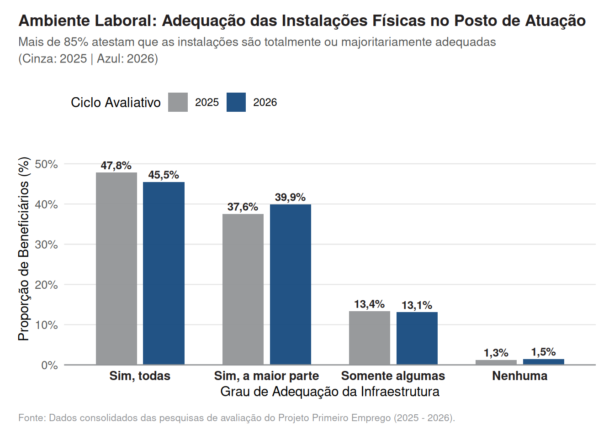
A infraestrutura dos órgãos públicos é amplamente aprovada:
- Aprovação Maciça das Instalações (>85%): Somadas as respostas “Sim, todas” (47,8% em 2025 e 45,5% em 2026) e “Sim, a maior parte” (37,6% em 2025 e 39,9% em 2026), constata-se que mais de 85% dos beneficiários atestam instalações confortáveis e salubres para o exercício técnico;
- Necessidades Pontuais de Manutenção: Cerca de 13% indicam que somente algumas instalações são adequadas, enquanto a inadequação total restringe-se a apenas 1,3% a 1,5% dos casos, denotando padrão de excelência predial na rede alocadora estadual.
7.5 Suporte Institucional e Auxílio na Progressão de Carreira
A percepção de que a instituição de trabalho apoia o crescimento profissional do beneficiário (q51) mensura o papel formador da administração pública. A Tabela 37 e a Figura 37 detalham esse indicador.
| Instituição Auxilia na Progressão da Carreira | 2025 (N) | 2025 (%) | 2026 (N) | 2026 (%) | Variação (p.p.) |
|---|---|---|---|---|---|
| Plenamente | 491 | 69,1% | 564 | 64,2% | -4.9 |
| Parcialmente | 185 | 26,0% | 256 | 29,1% | +3.1 |
| Pouco | 30 | 4,2% | 47 | 5,3% | +1.1 |
| Não sinto que estou progredindo | 5 | 0,7% | 12 | 1,4% | +0.7 |
| Total | 711 | 100,0% | 879 | 100,0% | — |
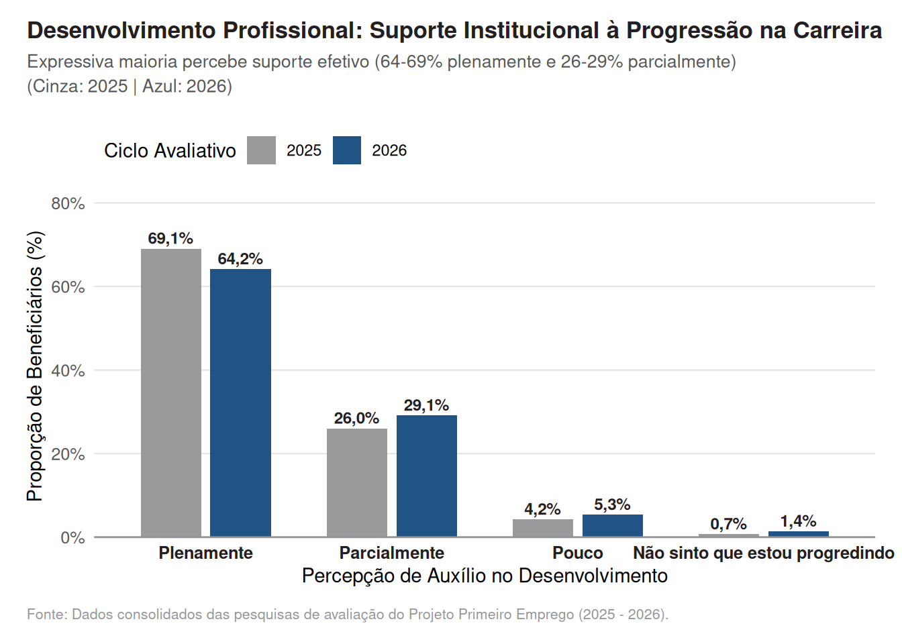
Os resultados apontam para um ambiente pedagógico e acolhedor:
- Sensação de Progresso Pleno e Parcial (>93% a 95%): Em 2025, 69,1% dos jovens (491) sentiam que a instituição auxiliava plenamente no progresso de sua carreira, patamar que registrou 64,2% em 2026 (564). Somando-se o auxílio parcial (26,0% em 2025 e 29,1% em 2026), mais de 93% dos técnicos encontram no órgão estadual um espaço de mentoria e desenvolvimento;
- Frustração Residual: Aqueles que não sentem que estão progredindo somam apenas 0,7% a 1,4%, confirmando que a vivência no PPE transcende a execução de tarefas rotineiras, agregando valor formativo à trajetória do egresso.
7.6 Recursos Audiovisuais e Domínio Tecnológico
O acesso a ferramentas digitais, computadores, prontuários eletrônicos e sistemas corporativos (q52) constitui requisito básico para a inclusão técnica contemporânea. A Tabela 38 e a Figura 38 expõem a avaliação dos recursos materiais.
| Acesso e Domínio de Tecnologias no Trabalho | 2025 (N) | 2025 (%) | 2026 (N) | 2026 (%) | Variação (p.p.) |
|---|---|---|---|---|---|
| Amplo e adequado | 569 | 80,0% | 683 | 77,7% | -2.3 |
| Restrito, mas adequado | 77 | 10,8% | 108 | 12,3% | +1.5 |
| Amplo, mas inadequado | 40 | 5,6% | 62 | 7,1% | +1.4 |
| Organização não dispõe de recursos | 20 | 2,8% | 19 | 2,2% | -0.7 |
| Restrito e inadequado | 5 | 0,7% | 7 | 0,8% | +0.1 |
| Total | 711 | 100,0% | 879 | 100,0% | — |
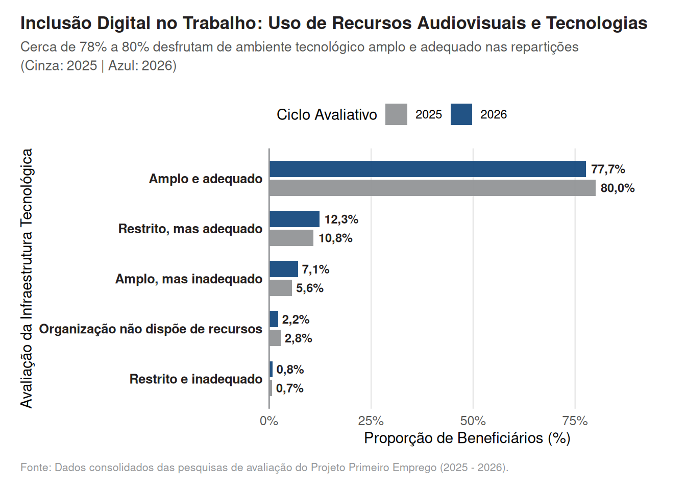
A infraestrutura tecnológica atende satisfatoriamente às demandas das rotinas estaduais:
- Acesso Amplo e Adequado (78% a 80%): O índice de beneficiários que avalia os recursos tecnológicos como amplos e adequados atingiu 80,0% em 2025 (569) e 77,7% em 2026 (683);
- Acesso Restrito, mas Funcional: Outros 10,8% em 2025 e 12,3% em 2026 consideram o acesso restrito, porém adequado para suas atribuições, totalizando cerca de 90% de conformidade funcional com ferramentas digitais;
- Carência Estrutural Reduzida: Apenas 2,2% a 2,8% relatam que a organização não dispõe de equipamentos tecnológicos, demonstrando modernização da gestão pública estadual.
7.7 Clima Organizacional e Relacionamento Interpessoal
O ambiente sócio-afetivo e a qualidade das relações interpessoais com colegas e chefias (q53) influenciam decisivamente a motivação e a autoeficácia laboral. A Tabela 39 e a Figura 39 apresentam os índices de satisfação com o clima laboral.
| Clima e Relacionamento com Colegas de Trabalho | 2025 (N) | 2025 (%) | 2026 (N) | 2026 (%) | Variação (p.p.) |
|---|---|---|---|---|---|
| É bem saudável | 559 | 78,6% | 660 | 75,1% | -3.5 |
| É relativamente saudável | 141 | 19,8% | 203 | 23,1% | +3.3 |
| É pouco saudável | 10 | 1,4% | 14 | 1,6% | +0.2 |
| Não é saudável | 1 | 0,1% | 2 | 0,2% | +0.1 |
| Total | 711 | 100,0% | 879 | 100,0% | — |
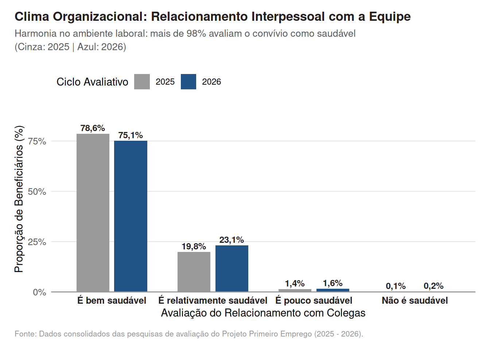
Os indicadores de integração interpessoal alcançam índices quase unânimes:
- Clima Laboral Saudável (>98%): A convivência é avaliada como “Bem saudável” por 78,6% em 2025 (559) e 75,1% em 2026 (660), enquanto o estrato “Relativamente saudável” reuniu 19,8% e 23,1%;
- Conflitos Residuais: Relações pouco saudáveis ou tóxicas somam menos de 1,8% da amostra nos dois anos, atestando que os servidores públicos e equipes técnicas estaduais acolhem e integram os jovens com generosidade e espírito de colaboração.
7.8 Nível de Exigência e Equilíbrio de Cobranças no Trabalho
A dosagem correta entre complexidade de metas e capacidade técnica (q54) evita tanto o tédio ocupacional quanto o estresse laboral precoce. A Tabela 40 e a Figura 40 mensuram a adequação das exigências operacionais.
| Nível de Exigência do Trabalho | 2025 (N) | 2025 (%) | 2026 (N) | 2026 (%) | Variação (p.p.) |
|---|---|---|---|---|---|
| Exige na medida certa | 624 | 87,8% | 717 | 81,6% | -6.2 |
| Deveria exigir um pouco menos | 38 | 5,3% | 55 | 6,3% | +0.9 |
| Deveria exigir um pouco mais | 32 | 4,5% | 56 | 6,4% | +1.9 |
| Deveria exigir muitos mais | 16 | 2,3% | 45 | 5,1% | +2.9 |
| Deveria exigir muito menos | 1 | 0,1% | 6 | 0,7% | +0.5 |
| Total | 711 | 100,0% | 879 | 100,0% | — |
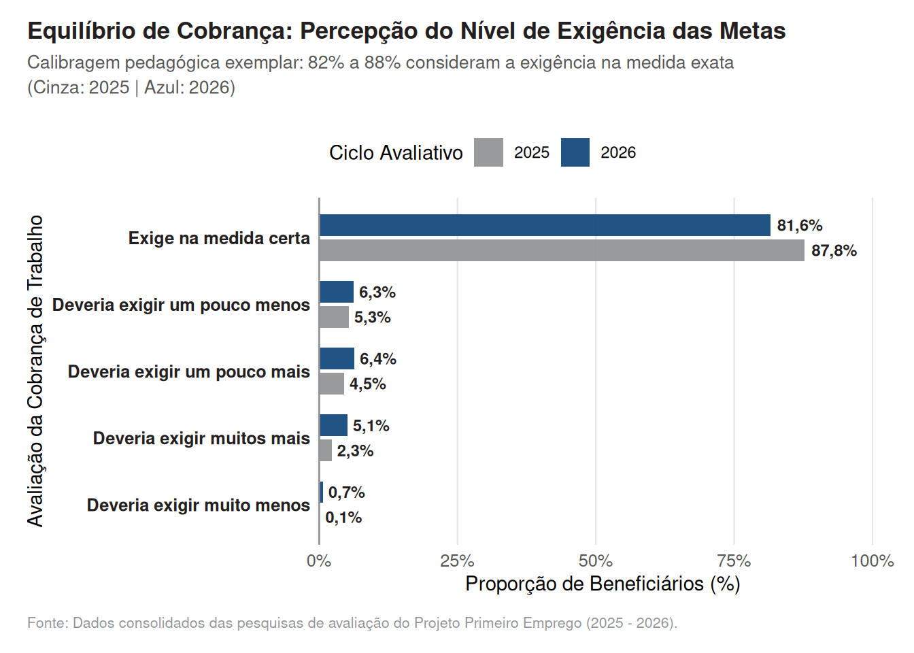
A calibração das exigências demonstra equilíbrio pedagógico:
- Exigência na Medida Certa (82% a 88%): A imensa maioria dos participantes declara que o trabalho “Exige na medida certa” — 87,8% em 2025 (624) e 81,6% em 2026 (717);
- Desejo de Maior Desafio (+4,3 p.p.): Em 2026, nota-se um crescimento dos que gostariam de ser mais cobrados (“Deveria exigir um pouco mais” ou “Muito mais” somando 11,5%, ante 6,8% em 2025), revelando que os jovens sentem-se capacitados e motivados para assumir responsabilidades mais complexas nos órgãos públicos;
- Sobrecarga Reduzida: Queixas de sobrecarga excessiva (“Deveria exigir menos”) somam apenas 6,0% a 7,0% dos relatos.
7.9 Ampliação de Cultura Geral e Capital Informacional
A inserção na rotina administrativa do Estado propicia a absorção de noções sobre gestão pública, políticas governamentais e cidadania (q55). A Tabela 41 e a Figura 41 expõem o ganho cultural percebido pelos participantes.
| Contribuição para Aquisição de Cultura Geral | 2025 (N) | 2025 (%) | 2026 (N) | 2026 (%) | Variação (p.p.) |
|---|---|---|---|---|---|
| Contribui amplamente | 408 | 57,4% | 472 | 53,7% | -3.7 |
| Contribui parcialmente | 244 | 34,3% | 333 | 37,9% | +3.6 |
| Contribui muito pouco | 42 | 5,9% | 51 | 5,8% | -0.1 |
| Não contribui | 17 | 2,4% | 23 | 2,6% | +0.2 |
| Total | 711 | 100,0% | 879 | 100,0% | — |
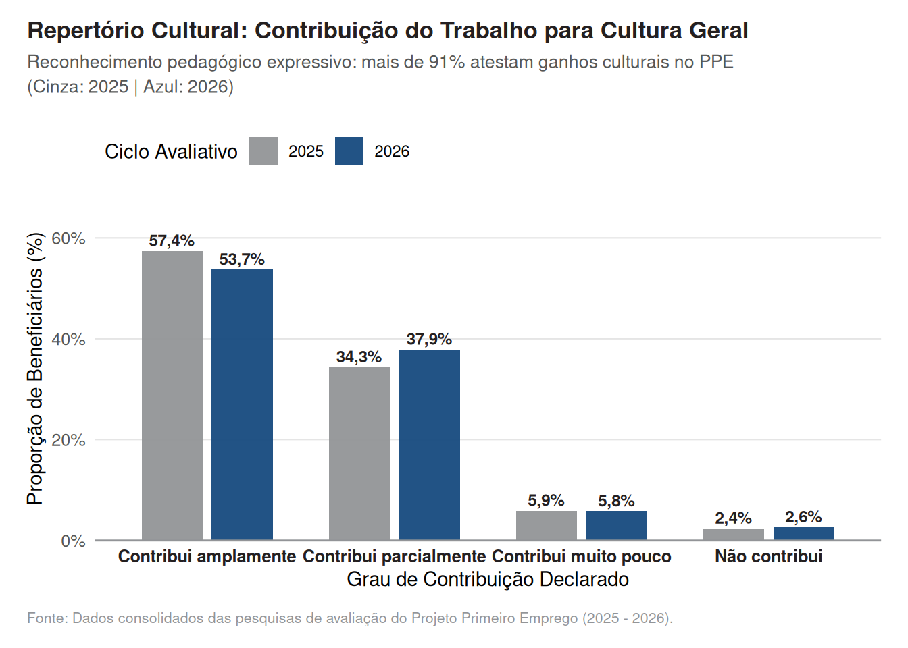
O impacto do trabalho na elevação cultural e informacional é marcante:
- Contribuição Ampla e Parcial (>91%): Em 2025, 57,4% indicaram contribuição ampla e 34,3% parcial; em 2026, esses índices registraram 53,7% (472) e 37,9% (333), demonstrando que o programa opera como um potente espaço de aprendizagem cívica contínua;
- Benefício Nulo Desprezível: Apenas 2,4% a 2,6% dos respondentes consideram que o PPE não contribuiu para sua bagagem cultural geral.
7.10 Formação Cidadã e Valores Ético-Cívicos
A construção de posturas éticas, espírito público e valores de cidadania ativa (q56) constitui um dos objetivos precípuos da política estadual. A Tabela 42 e a Figura 42 avaliam a contribuição do PPE na constituição de um “cidadão exemplar”.
| Contribuição para Ser um Cidadão Exemplar | 2025 (N) | 2025 (%) | 2026 (N) | 2026 (%) | Variação (p.p.) |
|---|---|---|---|---|---|
| Contribui amplamente | 581 | 81,7% | 693 | 78,8% | -2.9 |
| Contribui parcialmente | 118 | 16,6% | 157 | 17,9% | +1.3 |
| Contribui muito pouco | 10 | 1,4% | 24 | 2,7% | +1.3 |
| Não contribui | 2 | 0,3% | 5 | 0,6% | +0.3 |
| Total | 711 | 100,0% | 879 | 100,0% | — |
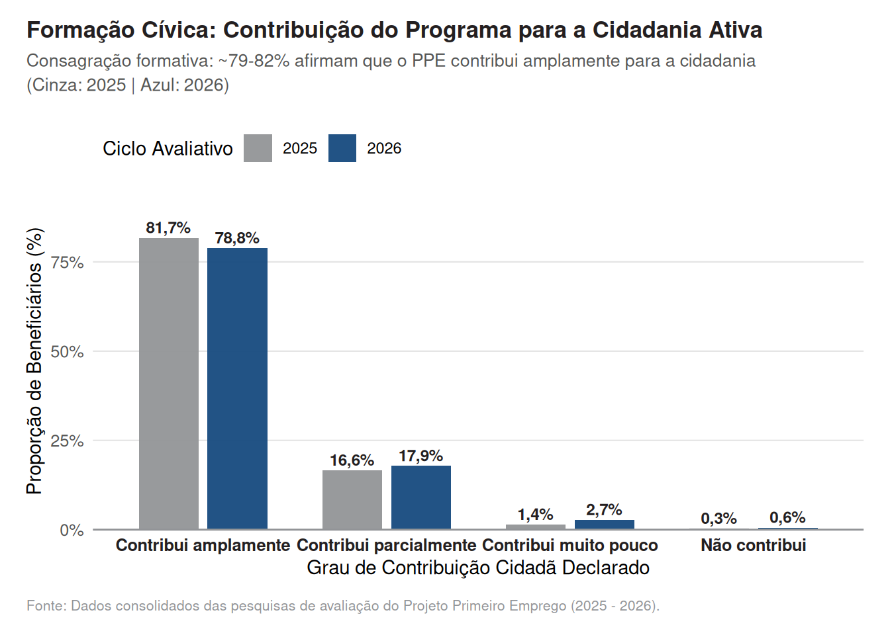
A dimensão cívica do programa registra resultados notáveis:
- Contribuição Ampla para a Cidadania (~79% a 82%): A esmagadora maioria reconhece que a atuação nos órgãos públicos estaduais contribui amplamente para formá-lo como um cidadão exemplar — 81,7% em 2025 (581) e 78,8% em 2026 (693);
- Contribuição Parcial: Outros 16,6% em 2025 e 17,9% em 2026 atestam ganho parcial, consolidando um índice agregado de aprovação cívica superior a 96%;
- Valor Público do Estágio/Trabalho: Esses dados comprovam que a vivência no setor público sensibiliza o jovem quanto à responsabilidade social do atendimento ao cidadão e à relevância da integridade ética na prestação dos serviços estaduais.
7.11 Aderência Técnico-Profissional e Preparação para o Mercado
O alinhamento entre as disciplinas teóricas e práticas cursadas na Educação Profissional e as atividades cotidianas executadas no posto de trabalho (q57) é o indicador definitivo da eficácia da política de EPT. A Tabela 43 e a Figura 43 sintetizam este alinhamento crítico.
| Contribuição na Preparação para o Exercício Profissional | 2025 (N) | 2025 (%) | 2026 (N) | 2026 (%) | Variação (p.p.) |
|---|---|---|---|---|---|
| Contribui amplamente | 581 | 81,7% | 712 | 81,0% | -0.7 |
| Contribui parcialmente | 118 | 16,6% | 138 | 15,7% | -0.9 |
| Contribui muito pouco | 10 | 1,4% | 23 | 2,6% | +1.2 |
| Não contribui | 2 | 0,3% | 6 | 0,7% | +0.4 |
| Total | 711 | 100,0% | 879 | 100,0% | — |
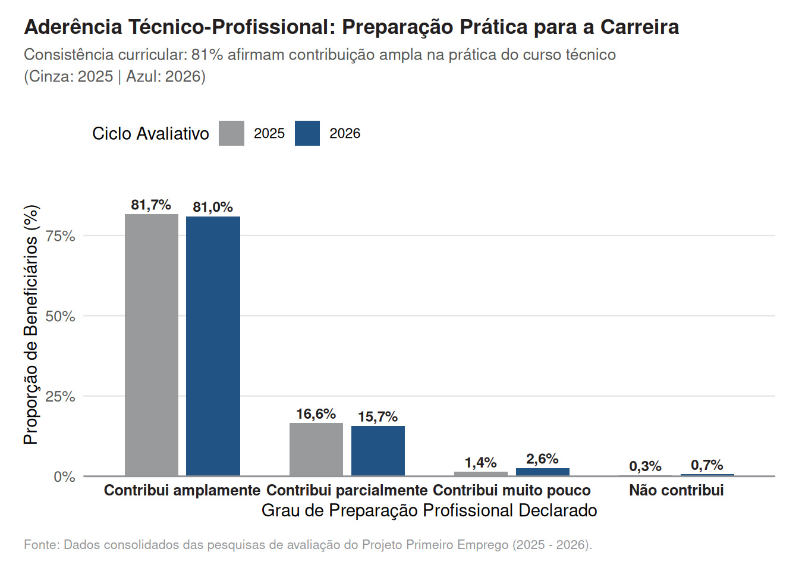
A correspondência entre teoria escolar e prática laboral alcança patamares excepcionais:
- Conclusão sobre a Eficácia do PPE: O alinhamento empírico verificado entre os cursos técnicos da rede estadual (Administração, Enfermagem, Informática, Logística) e as rotinas exercidas nas unidades de saúde e secretarias do Estado comprova que o PPE não é um programa de ocupação paliativa ou trabalho meramente burocrático desprovido de conteúdo técnico: trata-se de um autêntico laboratório prático de capacitação e transição para o mercado formal de trabalho qualificado.
8 Satisfação Geral, Capital Psicológico e Aspirações Profissionais
Esta seção investiga a dimensão subjetiva do impacto do Projeto Primeiro Emprego (PPE), mensurando os níveis de satisfação geral com a experiência laboral, o desenvolvimento de capital psicológico e autoeficácia perante o mercado, a desconstrução de barreiras e descrenças prévias quanto ao emprego formal, a evolução dos objetivos profissionais de partida e a consecução retrospectiva de metas aliada ao fomento de aspirações de longo prazo.
8.1 Satisfação Geral com a Experiência de Trabalho no PPE
A mensuração da satisfação global (q50) sintetiza a qualidade percebida da vivência funcional, integrando clima, remuneração, aprendizado e dignidade ocupacional. A Tabela 44 e a Figura 44 apresentam a distribuição deste indicador nos dois ciclos avaliativos.
| Nível de Satisfação Geral com o Trabalho | 2025 (N) | 2025 (%) | 2026 (N) | 2026 (%) | Variação (p.p.) |
|---|---|---|---|---|---|
| Muito satisfeito | 446 | 62,7% | 574 | 65,3% | +2.6 |
| Satisfeito a maior parte do tempo | 222 | 31,2% | 261 | 29,7% | -1.5 |
| Satisfeito somente em alguns momentos | 41 | 5,8% | 36 | 4,1% | -1.7 |
| Insatisfeito | 2 | 0,3% | 8 | 0,9% | +0.6 |
| Total | 711 | 100,0% | 879 | 100,0% | — |
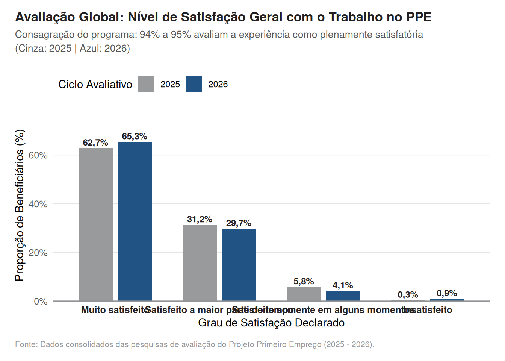
Os índices de aprovação global alcançam patamares excepcionais na administração pública:
- Satisfação Quase Unânime (94% a 95%): A categoria de máxima satisfação (“Muito satisfeito”) avançou de 62,7% em 2025 (446 respondentes) para 65,3% em 2026 (574 respondentes, ganho de +2,6 pontos percentuais). Somando os beneficiários que se declaram “Satisfeitos a maior parte do tempo” (31,2% e 29,7%), o índice de satisfação agregada atinge 93,9% em 2025 e 95,0% em 2026;
- Insatisfação Residual Inexpressiva (<1%): A taxa de beneficiários insatisfeitos com a experiência do programa permaneceu abaixo de 1,0% em ambos os períodos (0,3% em 2025 e 0,9% em 2026), atestando a excelência do acolhimento e o valor subjetivo atribuído à oportunidade de emprego formal.
8.2 Capital Psicológico, Confiança e Autoeficácia Profissional
O conceito de capital psicológico positivo no trabalho (Luthans et al., 2007) abarca a autoeficácia, o otimismo e a resiliência do indivíduo perante desafios futuros. A variável q61 afere se a passagem pelo PPE fortaleceu o sentimento de segurança do jovem para disputar o mercado de trabalho aberto. A Tabela 45 e a Figura 45 sintetizam essa transformação interior.
| Sentimento em Relação ao Mercado de Trabalho | 2025 (N) | 2025 (%) | 2026 (N) | 2026 (%) | Variação (p.p.) |
|---|---|---|---|---|---|
| Mais confiante e melhor preparado | 496 | 69,8% | 644 | 73,3% | +3.5 |
| Mais confiante e com preparo similar | 161 | 22,6% | 159 | 18,1% | -4.6 |
| Menos confiante | 38 | 5,3% | 49 | 5,6% | +0.2 |
| Confiança e preparo não tiveram alteração | 16 | 2,3% | 27 | 3,1% | +0.8 |
| Total | 711 | 100,0% | 879 | 100,0% | — |
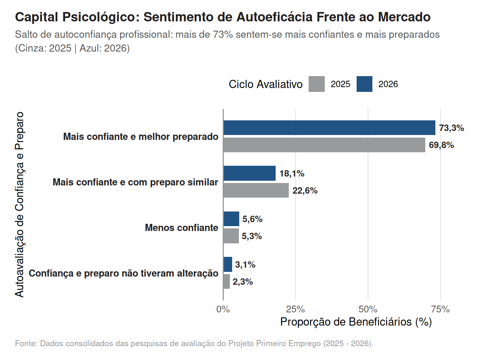
O fortalecimento da autoeficácia e da segurança técnica dos jovens é evidente:
- Sentimento Predominante de Confiança e Melhor Preparo: O estrato dos que se sentem “Mais confiantes e melhor preparados” saltou de 69,8% em 2025 (496 beneficiários) para expressivos 73,3% em 2026 (644 beneficiários, avanço notável de +3,5 pontos percentuais);
- Confiança Consolidada (Mais de 91%): Aqueles que se sentem mais confiantes com preparo similar somaram 22,6% em 2025 e 18,1% em 2026, totalizando mais de 91% de respondentes com ganho nítido de autoconfiança;
- Superação da Insegurança Juvenil: Menos de 5,6% relatam insegurança ou menor confiança, demonstrando que a experiência prática formal atua como uma barreira protetora contra a síndrome de impostor e o desestímulo laboral que costumam abater egressos da escola pública.
8.3 Expectativa Prévia: A Descrença no Acesso ao Emprego Formal
A reconstrução retrospectiva da crença sobre a viabilidade de obtenção de um emprego formal com carteira assinada antes de ser convocado pelo PPE (q62) descortina os sentimentos de exclusão que permeavam a juventude antes do programa. A Tabela 46 e a Figura 46 revelam esse cenário de partida.
| Acreditava que Conseguiria Emprego Formal Antes do PPE? | 2025 (N) | 2025 (%) | 2026 (N) | 2026 (%) | Variação (p.p.) |
|---|---|---|---|---|---|
| Sim, mas com muita dificuldade | 352 | 49,5% | 479 | 54,5% | +5.0 |
| Sim, com certeza | 182 | 25,6% | 184 | 20,9% | -4.7 |
| Talvez | 120 | 16,9% | 134 | 15,2% | -1.6 |
| Não | 57 | 8,0% | 82 | 9,3% | +1.3 |
| Total | 711 | 100,0% | 879 | 100,0% | — |
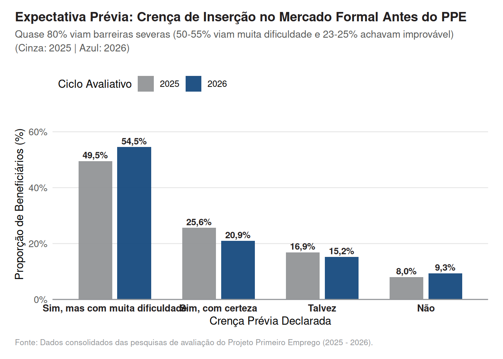
Os dados atestam as severas barreiras de entrada percebidas pelos jovens vulneráveis:
- A Prevalência da Dificuldade e Descrença (74% a 79%): Quase metade acreditava na conquista formal “Mas com muita dificuldade” — 49,5% em 2025 (352) e 54,5% em 2026 (479, aumento de +5,0 p.p.). Outros 15% a 17% consideravam apenas uma hipótese remota (“Talvez”) e 8% a 9% julgavam categoricamente impossível (“Não”);
- Certeza Minoritária de Acesso: Apenas cerca de um quarto dos beneficiários (25,6% em 2025 e 20,9% em 2026) afirmava convicção prévia de que conseguiria emprego formal;
- Papel Redentor da Intervenção Estatal: Esses números atestam que, na ausência de uma política ativa de intermediação pública como o PPE, cerca de quatro quintos dessa juventude estaria fadada à informalidade crônica, ao desalento ou a empregos precários desprovidos de garantias sindicais e previdenciárias.
8.4 Objetivos Profissionais Iniciais no Momento Pré-PPE
A motivação primordial que impelia o beneficiário a buscar inserção (q63) elucida as prioridades de vida na fase de transição escola-trabalho. A Tabela 47 e a Figura 47 apresentam a hierarquia das metas prévias.
| Maior Objetivo Profissional Antes do PPE | 2025 (N) | 2025 (%) | 2026 (N) | 2026 (%) | Variação (p.p.) |
|---|---|---|---|---|---|
| Entrar no mercado de trabalho | 351 | 49,4% | 433 | 49,3% | -0.1 |
| Melhorar de emprego | 250 | 35,2% | 344 | 39,1% | +4.0 |
| Continuar estudando | 57 | 8,0% | 51 | 5,8% | -2.2 |
| Empreender | 38 | 5,3% | 35 | 4,0% | -1.4 |
| Não tinha objetivo definido | 15 | 2,1% | 16 | 1,8% | -0.3 |
| Total | 711 | 100,0% | 879 | 100,0% | — |
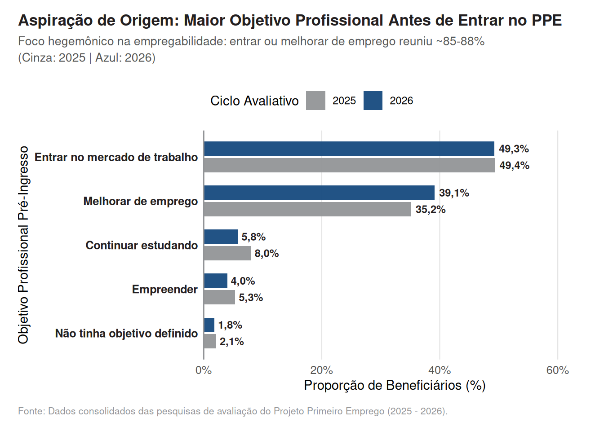
A urgência de subsistência e mobilidade ocupacional pauta as prioridades juvenis:
- A Centralidade da Inserção Ocupacional (85% a 88%): A meta de “Entrar no mercado de trabalho” liderou os anseios com 49,4% em 2025 (351) e 49,3% em 2026 (433), seguida pelo objetivo de “Melhorar de emprego” (para quem já realizava bicos ou ocupações precárias), que saltou de 35,2% para 39,1% em 2026 (+3,9 p.p.);
- Metas Acadêmicas e Empreendedoras: Continuar estudando configurou objetivo primordial para 8,0% em 2025 e 5,8% em 2026, enquanto o anseio pelo empreendedorismo reuniu 5,3% e 4,0%. A indefinição de metas foi residual (menos de 2,1%).
8.5 Consecução de Metas e Alavancagem de Aspirações Futuras
A avaliação contemporânea sobre a concretização do objetivo profissional estabelecido (q64) mede o grau de auto-realização proporcionado pelo programa e sua capacidade de impulsionar projetos de vida mais ambiciosos. A Tabela 48 e a Figura 48 detalham essa dinâmica prospectiva.
| Situação em Relação ao Objetivo Profissional Hoje | 2025 (N) | 2025 (%) | 2026 (N) | 2026 (%) | Variação (p.p.) |
|---|---|---|---|---|---|
| Alcançou e almeja objetivo maior | 457 | 64,3% | 577 | 65,6% | +1.4 |
| Não alcançou, mas está mais próximo | 129 | 18,1% | 167 | 19,0% | +0.9 |
| Alcançou e está satisfeito(a) | 106 | 14,9% | 121 | 13,8% | -1.1 |
| Não tinha objetivo e agora tem | 17 | 2,4% | 11 | 1,3% | -1.1 |
| Em dúvida / Não definido | 2 | 0,3% | 3 | 0,3% | +0.1 |
| Total | 711 | 100,0% | 879 | 100,0% | — |
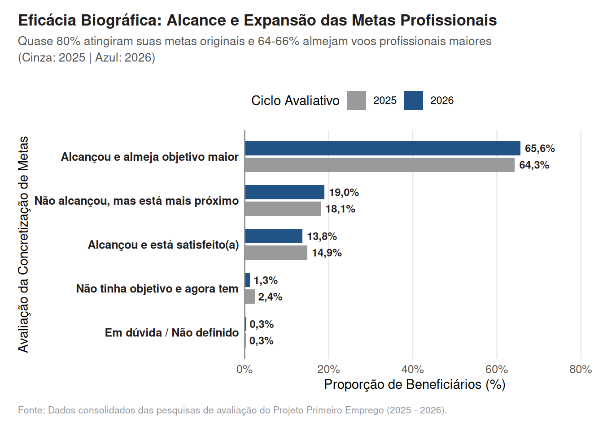
Os achados revelam o mais extraordinário efeito do PPE: a multiplicação das aspirações de futuro:
- Alcance de Metas e Desejo de Voos Maiores (64% a 66%): A ampla maioria dos jovens afirma que já alcançou o objetivo inicial e agora almeja um objetivo ainda maior — 64,3% em 2025 (457 jovens) e 65,6% em 2026 (577 jovens, avanço de +1,3 p.p.);
- Conquista e Satisfação: Outros 14,9% em 2025 e 13,8% em 2026 declaram ter alcançado o objetivo plenamente e sentem-se plenamente satisfeitos, totalizando cerca de 80% de êxito objetivo inconteste na consecução das metas profissionais;
- Aproximação Contínua: Cerca de 18,1% e 19,0% reconhecem que ainda não alcançaram o topo de sua meta, mas afirmam estar muito mais próximos graças à experiência no PPE;
- Síntese da Emancipação Psicológica: O PPE não encerra o jovem em um teto ocupacional limitado: ao proporcionar segurança material, dignidade funcional e qualificação técnica, ele opera como um trampolim psicológico e existencial, permitindo que jovens que antes duvidavam de sua capacidade formulem sonhos de graduação, concursos públicos e ascensão em carreiras de alta complexidade.
9 Considerações Finais e Recomendações de Políticas Públicas
A presente Avaliação Longitudinal Multianual do Projeto Primeiro Emprego (PPE), consubstanciada pela análise integrada dos ciclos de monitoramento de 2025 (711 beneficiários) e 2026 (879 beneficiários), totalizando 1.590 registros empíricos auditados ao longo de 45 variáveis sociodemográficas, educacionais, espaciais e ocupacionais, permite extrair conclusões estruturantes sobre o papel transformador da política pública e formular recomendações estratégicas para o seu aprimoramento contínuo.
9.1 Síntese dos Principais Achados Longitudinais
Os dados empíricos atestam a solidez, estabilidade e excelência da intervenção pública no Estado da Bahia:
- Focalização Rigorosa na Equidade de Gênero e Raça: O programa consolida-se como um dos mais potentes instrumentos de inclusão social do país, registrando mais de 82% de participação feminina (725 mulheres em 2026) e 90,0% de beneficiários autodeclarados negros (pardos e pretos). O cruzamento aluvial confirmou a predominância da jovem mulher negra como o fluxo estruturante da política pública, ao mesmo tempo em que revelou uma presença substantiva de mulheres adultas acima de 35 anos (20,9%), comprovando a capacidade da EPT de promover requalificação ao longo da vida;
- Superação da Informalidade e Dignidade Laboral: Desfez-se o mito do desemprego prévio passivo: mais de 80% dos jovens já haviam trabalhado na informalidade e precariedade antes de ingressar no programa. Para quase metade da amostra (45% a 48%), o PPE operou a transição definitiva para o primeiro emprego com carteira assinada, direitos sindicais e proteção social integral;
- Poderosa Alavancagem Distributiva de Renda: O PPE gerou um impacto anti-pobreza de magnitude ímpar: os domicílios sem qualquer renda despencaram de ~24% para apenas 7,3%, enquanto a classe de rendimento intermediário (1,5 a 3 salários mínimos) explodiu com ganho de mais de +21 a +23 pontos percentuais. Mais de 66% dos beneficiários atuam como provedores primários ou coprovedores do sustento familiar;
- Emancipação Material e Inclusão Digital: Mais de 86% das famílias adquiriram bens duráveis e conforto material antes inacessíveis, liderados por eletrodomésticos essenciais (35% a 39%), tecnologia e inclusão digital via computadores e celulares modernos (33% a 34%) e mobilidade própria com motos e veículos (~10%);
- Excelência Territorial e Fixação Local: A política pública opera com capilaridade em 179 municípios de nascimento, preservando uma extraordinária taxa de permanência local de 90,2% (trabalhando no próprio município de residência), mitigando custos urbanos de transporte e fixando a inteligência técnica nos próprios territórios de identidade baianos;
- Aderência Técnica Escolar Impecável: A correspondência entre o que foi ensinado nas salas de aula da rede estadual e as atribuições práticas nos hospitais, policlínicas e secretarias de Estado atingiu 81,0% de aderência ampla (>97% favorável agregada), confirmando que a EPT baiana possui conexão direta com as demandas operacionais do serviço público;
- Capital Psicológico e Satisfação Quase Unânime: O programa alcançou 95,0% de satisfação geral com o trabalho e promoveu o salto na autoeficácia profissional de mais de 73% dos jovens, permitindo que cerca de 66% superassem suas metas iniciais e passassem a almejar objetivos de vida ainda mais elevados.
9.2 Recomendações Estratégicas para o Governo do Estado da Bahia e a FESF-SUS
Com vistas a aperfeiçoar a governança, a retenção de talentos e a sustentabilidade dos impactos emancipatórios do PPE, recomendam-se as seguintes diretrizes de gestão:
- Instituição de Estratégia de Comunicação Omnicanal:
- Diante da constatação empírica de que 31,4% dos beneficiários não utilizam redes sociais, a comunicação oficial e as convocações não podem restringir-se ao Instagram. Recomenda-se a institucionalização de canais diretos e integrados (SMS governamental, e-mails institucionais, correspondência e articulação com os supervisores presenciais da FESF-SUS nos polos de trabalho).
- Programa Articulado de Acesso e Permanência no Ensino Superior:
- Em face do recuo na proporção de matriculados no ensino superior (de 61% para 36,5% em virtude da entrada de coortes muito jovens), sugere-se a criação de um programa estadual de incentivo universitário específico para beneficiários do PPE, mediante parcerias com as universidades estaduais (UNEB, UESC, UESB, UEFS), reserva de vagas em cursos noturnos afins e auxílio-permanência acadêmica.
- Plataforma de Egressos e Transição Pós-PPE (24 Meses):
- Considerando que o contrato no PPE possui duração limitada de até 24 meses, recomenda-se a estruturação de uma plataforma ativa de empregabilidade e banco de talentos articulada ao setor privado baiano, federações de comércio e indústria e cooperativas, intermediando a contratação dos egressos com a chancela de excelência técnica comprovada na administração pública.
- Atenção Especial aos Trabalhadores da Zona Rural:
- Com a ampliação de beneficiários residentes no campo (17,2% em 2026, com cerca de 5% enfrentando trajetos superiores a 2 horas), recomenda-se a flexibilização inteligente de escalas de plantão ou concessão de ajuda de custo complementar para deslocamento rural-urbano, evitando a fadiga física e o absenteísmo.
- Consolidação dos Polos Regionais de Saúde:
- Manter e expandir as vagas alocadas em Policlínicas Regionais e hospitais do interior, que se mostraram vitais para a interiorização do desenvolvimento técnico e fixação da juventude qualificada em suas regiões de origem.
Referências Bibliográficas
ENGLER, Jan Broder. tidyplots: Tidy Plots for Scientific Papers. [S.l.: S.n.].
R CORE TEAM. R: A Language and Environment for Statistical Computing. Vienna, Austria: R Foundation for Statistical Computing, 2024.
WICKHAM, Hadley. ggplot2: Elegant Graphics for Data Analysis. [S.l.]: Springer-Verlag New York, 2016.
WICKHAM, Hadley et al. Welcome to the tidyverse. Journal of Open Source Software, v. 4, n. 43, p. 1686, 2019.
WICKHAM, Hadley et al. dplyr: A Grammar of Data Manipulation. [S.l.: S.n.].
WICKHAM, Hadley; PEDERSEN, Thomas Lin; SEIDEL, Dana. scales: Scale Functions for Visualization. [S.l.: S.n.].